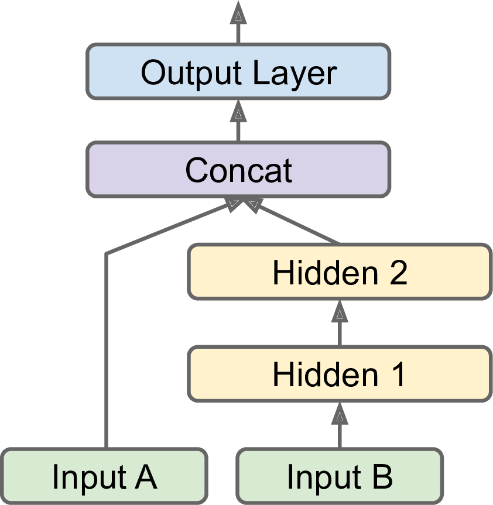

- Chapter 10 – Introduction to Artificial Neural Networks with Keras
- References
Chapter 10 – Introduction to Artificial Neural Networks with Keras
First, let’s import a few common modules, ensure MatplotLib plots figures inline and prepare a function to save the figures. We also check that Python 3.5 or later is installed (although Python 2.x may work, it is deprecated so we strongly recommend you use Python 3 instead), as well as Scikit-Learn ≥0.20 and TensorFlow ≥2.0.
# Python ≥3.5 is required
import sys
assert sys.version_info >= (3, 5)
# Scikit-Learn ≥0.20 is required
import sklearn
assert sklearn.__version__ >= "0.20"
try:
# %tensorflow_version only exists in Colab.
%tensorflow_version 2.x
except Exception:
pass
# TensorFlow ≥2.0 is required
import tensorflow as tf
assert tf.__version__ >= "2.0"
# Common imports
import numpy as np
import os
from tensorflow import keras
# to make this notebook's output stable across runs
np.random.seed(42)
# To plot pretty figures
%matplotlib inline
import matplotlib as mpl
import matplotlib.pyplot as plt
mpl.rc('axes', labelsize=14)
mpl.rc('xtick', labelsize=12)
mpl.rc('ytick', labelsize=12)
# Where to save the figures
PROJECT_ROOT_DIR = "."
CHAPTER_ID = "ann"
IMAGES_PATH = os.path.join(PROJECT_ROOT_DIR, "images", CHAPTER_ID)
os.makedirs(IMAGES_PATH, exist_ok=True)
def save_fig(fig_id, tight_layout=True, fig_extension="png", resolution=300):
path = os.path.join(IMAGES_PATH, fig_id + "." + fig_extension)
print("Saving figure", fig_id)
if tight_layout:
plt.tight_layout()
plt.savefig(path, format=fig_extension, dpi=resolution)
tf.__version__'2.4.1'keras.__version__'2.4.0'Perceptrons
The Perceptron is one of the simplest ANN architectures, invented in 1957 by Frank Rosenblatt. It is based on a slightly different artificial neuron (see Figure 10-4) called a threshold logic unit (TLU), or sometimes a linear threshold unit (LTU). The inputs and output are numbers (instead of binary on/off values), and each input connection is associated with a weight. The TLU computes a weighted sum of its inputs (\(\mathbf z = w_1 x_1 + w_2 x_2 +\cdots + w_n x_n = \mathbf x^T\mathbf w\)), then applies a step function to that sum and outputs the result: \(h_{\mathbf w}(\mathbf x) = step(\mathbf z)\), where \(\mathbf z = \mathbf x^T\mathbf w\).

Equation 10-2. Computing the outputs of a fully connected layer
\[h_{\mathbf W,\mathbf b}(\mathbf X)=\phi(\mathbf X\mathbf W+\mathbf b)\] In this equation:
As always, \(\mathbf X\) represents the matrix of input features. It has one row per instance and one column per feature.
The weight matrix \(\mathbf W\) contains all the connection weights except for the ones from the bias neuron. It has one row per input neuron and one column per artificial neuron in the layer.
The bias vector \(\mathbf b\) contains all the connection weights between the bias neuron and the artificial neurons. It has one bias term per artificial neuron.
The function \(\phi\) is called the activation function: when the artificial neurons are TLUs, it is a step function (but we will discuss other activation functions shortly).
Note: we set max_iter and tol explicitly to avoid warnings about the fact that their default value will change in future versions of Scikit-Learn.
import numpy as np
from sklearn.datasets import load_iris
from sklearn.linear_model import Perceptron
iris = load_iris()
X = iris.data[:, (2, 3)] # petal length, petal width
y = (iris.target == 0).astype(np.int)
per_clf = Perceptron(max_iter=1000, tol=1e-3, random_state=42)
per_clf.fit(X, y)
y_pred = per_clf.predict([[2, 0.5]])yarray([1, 1, 1, 1, 1, 1, 1, 1, 1, 1, 1, 1, 1, 1, 1, 1, 1, 1, 1, 1, 1, 1,
1, 1, 1, 1, 1, 1, 1, 1, 1, 1, 1, 1, 1, 1, 1, 1, 1, 1, 1, 1, 1, 1,
1, 1, 1, 1, 1, 1, 0, 0, 0, 0, 0, 0, 0, 0, 0, 0, 0, 0, 0, 0, 0, 0,
0, 0, 0, 0, 0, 0, 0, 0, 0, 0, 0, 0, 0, 0, 0, 0, 0, 0, 0, 0, 0, 0,
0, 0, 0, 0, 0, 0, 0, 0, 0, 0, 0, 0, 0, 0, 0, 0, 0, 0, 0, 0, 0, 0,
0, 0, 0, 0, 0, 0, 0, 0, 0, 0, 0, 0, 0, 0, 0, 0, 0, 0, 0, 0, 0, 0,
0, 0, 0, 0, 0, 0, 0, 0, 0, 0, 0, 0, 0, 0, 0, 0, 0, 0])y_predarray([1])y_pred2 = per_clf.predict([[2, 1]])
y_pred2array([0])a = -per_clf.coef_[0][0] / per_clf.coef_[0][1]
b = -per_clf.intercept_ / per_clf.coef_[0][1]
axes = [0, 5, 0, 2]
x0, x1 = np.meshgrid(
np.linspace(axes[0], axes[1], 500).reshape(-1, 1),
np.linspace(axes[2], axes[3], 200).reshape(-1, 1),
)
X_new = np.c_[x0.ravel(), x1.ravel()]
y_predict = per_clf.predict(X_new)
zz = y_predict.reshape(x0.shape)
plt.figure(figsize=(10, 4))
plt.plot(X[y==0, 0], X[y==0, 1], "bs", label="Not Iris-Setosa")
plt.plot(X[y==1, 0], X[y==1, 1], "yo", label="Iris-Setosa")
plt.plot([axes[0], axes[1]], [a * axes[0] + b, a * axes[1] + b], "k-", linewidth=3)
from matplotlib.colors import ListedColormap
custom_cmap = ListedColormap(['#9898ff', '#fafab0'])
plt.contourf(x0, x1, zz, cmap=custom_cmap)
plt.xlabel("Petal length", fontsize=14)
plt.ylabel("Petal width", fontsize=14)
plt.legend(loc="lower right", fontsize=14)
plt.axis(axes)
save_fig("perceptron_iris_plot")
plt.show()Saving figure perceptron_iris_plotpng
The Multilayer Perceptron (MLP) and Backpropagation
For many years researchers struggled to find a way to train MLPs, without success. But in 1986, David Rumelhart, Geoffrey Hinton, and Ronald Williams published a groundbreaking paper that introduced the backpropagation training algorithm, which is still used today. In short, it is Gradient Descent (introduced in Chapter 4) using an efficient technique for computing the gradients automatically: in just two passes through the network (one forward, one backward), the backpropagation algorithm is able to compute the gradient of the network’s error with regard to every single model parameter. In other words, it can find out how each connection weight and each bias term should be tweaked in order to reduce the error. Once it has these gradients, it just performs a regular Gradient Descent step, and the whole process is repeated until the network converges to the solution.
Let’s run through this algorithm in a bit more detail:
It handles one mini-batch at a time (for example, containing 32 instances each), and it goes through the full training set multiple times. Each pass is called an epoch.
Each mini-batch is passed to the network’s input layer, which sends it to the first hidden layer. The algorithm then computes the output of all the neurons in this layer (for every instance in the mini-batch). The result is passed on to the next layer, its output is computed and passed to the next layer, and so on until we get the output of the last layer, the output layer. This is the forward pass: it is exactly like making predictions, except all intermediate results are preserved since they are needed for the backward pass.
Next, the algorithm measures the network’s output error (i.e., it uses a loss function that compares the desired output and the actual output of the network, and returns some measure of the error).
Then it computes how much each output connection contributed to the error. This is done analytically by applying the chain rule (perhaps the most fundamental rule in calculus), which makes this step fast and precise.
The algorithm then measures how much of these error contributions came from each connection in the layer below, again using the chain rule, working backward until the algorithm reaches the input layer. As explained earlier, this reverse pass efficiently measures the error gradient across all the connection weights in the network by propagating the error gradient backward through the network (hence the name of the algorithm).
Finally, the algorithm performs a Gradient Descent step to tweak all the connection weights in the network, using the error gradients it just computed.
Activation functions
def sigmoid(z):
return 1 / (1 + np.exp(-z))
def relu(z):
return np.maximum(0, z)
def derivative(f, z, eps=0.000001):
return (f(z + eps) - f(z - eps))/(2 * eps)z = np.linspace(-5, 5, 200)
plt.figure(figsize=(11,4))
plt.subplot(121)
plt.plot(z, np.sign(z), "r-", linewidth=1, label="Step")
plt.plot(z, sigmoid(z), "g--", linewidth=2, label="Sigmoid")
plt.plot(z, np.tanh(z), "b-", linewidth=2, label="Tanh")
plt.plot(z, relu(z), "m-.", linewidth=2, label="ReLU")
plt.grid(True)
plt.legend(loc="center right", fontsize=14)
plt.title("Activation functions", fontsize=14)
plt.axis([-5, 5, -1.2, 1.2])
plt.subplot(122)
plt.plot(z, derivative(np.sign, z), "r-", linewidth=1, label="Step")
plt.plot(0, 0, "ro", markersize=5)
plt.plot(0, 0, "rx", markersize=10)
plt.plot(z, derivative(sigmoid, z), "g--", linewidth=2, label="Sigmoid")
plt.plot(z, derivative(np.tanh, z), "b-", linewidth=2, label="Tanh")
plt.plot(z, derivative(relu, z), "m-.", linewidth=2, label="ReLU")
plt.grid(True)
#plt.legend(loc="center right", fontsize=14)
plt.title("Derivatives", fontsize=14)
plt.axis([-5, 5, -0.2, 1.2])
save_fig("activation_functions_plot")
plt.show()Saving figure activation_functions_plot
png
Figure 10-8. Activation functions and their derivatives
It turns out that some of the limitations of Perceptrons can be eliminated by stacking multiple Perceptrons. The resulting ANN is called a Multilayer Perceptron (MLP). An MLP can solve the XOR problem, as you can verify by computing the output of the MLP represented on the right side of Figure 10-6: with inputs (0, 0) or (1, 1), the network outputs 0, and with inputs (0, 1) or (1, 0) it outputs 1. All connections have a weight equal to 1, except the four connections where the weight is shown.

def heaviside(z):
return (z >= 0).astype(z.dtype)
def mlp_xor(x1, x2, activation=heaviside):
return activation(-activation(x1 + x2 - 1.5) + activation(x1 + x2 - 0.5) - 0.5)x1s = np.linspace(-0.2, 1.2, 100)
x2s = np.linspace(-0.2, 1.2, 100)
x1, x2 = np.meshgrid(x1s, x2s)
z1 = mlp_xor(x1, x2, activation=heaviside)
z2 = mlp_xor(x1, x2, activation=sigmoid)
plt.figure(figsize=(10,4))
plt.subplot(121)
plt.contourf(x1, x2, z1)
plt.plot([0, 1], [0, 1], "gs", markersize=20)
plt.plot([0, 1], [1, 0], "y^", markersize=20)
plt.title("Activation function: heaviside", fontsize=14)
plt.grid(True)
plt.subplot(122)
plt.contourf(x1, x2, z2)
plt.plot([0, 1], [0, 1], "gs", markersize=20)
plt.plot([0, 1], [1, 0], "y^", markersize=20)
plt.title("Activation function: sigmoid", fontsize=14)
plt.grid(True)png
Regression MLP
In general, when building an MLP for regression, you do not want to use any activation function for the output neurons, so they are free to output any range of values. If you want to guarantee that the output will always be positive, then you can use the ReLU activation function in the output layer. Alternatively, you can use the softplus activation function, which is a smooth variant of ReLU: \(\text{softplus}(z) = \log(1 + \exp(z))\). It is close to \(0\) when \(z\) is negative, and close to \(z\) when \(z\) is positive. Finally, if you want to guarantee that the predictions will fall within a given range of values, then you can use the logistic function \[\displaystyle f(x)=\frac {L}{1+e^{-k(x-x_{0})}}\] where - \(x_{0}\), the \(x\) value of the sigmoid’s midpoint; - \(L\), the curve’s maximum value; - \(k\), the logistic growth rate or steepness of the curve.
or the hyperbolic tangent, \[\displaystyle \tanh x=\frac {\sinh x}{\cosh x}=\frac {e^{x}-e^{-x}}{e^{x}+e^{-x}}=\frac {e^{2x}-1}{e^{2x}+1}\]
and then scale the labels to the appropriate range: \(0\) to \(1\) for the logistic function and \(–1\) to \(1\) for the hyperbolic tangent.
The loss function to use during training is typically the mean squared error, but if you have a lot of outliers in the training set, you may prefer to use the mean absolute error instead. Alternatively, you can use the Huber loss, which is a combination of both.
The Huber loss is quadratic when the error is smaller than a threshold \(\delta\) (typically 1) but linear when the error is larger than \(\delta\). The linear part makes it less sensitive to outliers than the mean squared error, and the quadratic part allows it to converge faster and be more precise than the mean absolute error.
Classification MLPs
MLPs can also be used for classification tasks. For a binary classification problem, you just need a single output neuron using the logistic activation function: the output will be a number between 0 and 1, which you can interpret as the estimated probability of the positive class. The estimated probability of the negative class is equal to one minus that number.
If each instance can belong only to a single class, out of three or more possible classes (e.g., classes 0 through 9 for digit image classification), then you need to have one output neuron per class, and you should use the softmax activation function for the whole output layer (see Figure 10-9). The softmax function (introduced in Chapter 4) will ensure that all the estimated probabilities are between 0 and 1 and that they add up to 1 (which is required if the classes are exclusive). This is called multiclass classification.
softmax function: \[\displaystyle \sigma(\mathbf{z})_{i}=\frac {e^{z_i}}{\sum_{j=1}^{K}e^{z_j}}\quad \text{ for } i=1, \cdots, K \text{ and }\mathbf{z}=(z_1,\cdots ,z_K)\in \mathbb{R}^{K}\]
In simple words, it applies the standard exponential function to each element \(z_{i}\) of the input vector \(\displaystyle \mathbf{z}\) and normalizes these values by dividing by the sum of all these exponentials; this normalization ensures that the sum of the components of the output vector $ ()$ is 1.

Regarding the loss function, since we are predicting probability distributions, the cross-entropy loss (also called the log loss, see Chapter 4) is generally a good choice.
Table 10-2. Typical classification MLP architecture
| Hyperparameter | Binary classification | Multilabel binary classification | Multiclass classification |
|---|---|---|---|
| Input and hidden layers | Same as regression | Same as regression | Same as regression |
| # output neurons | 1 | 1 per label | 1 per class |
| Output layer activation | Logistic | Logistic | Softmax |
| Loss function | Cross entropy | Cross entropy | Cross entropy |
Implementing MLPs with Keras
Building an Image Classifier Using the Sequential API
First, we need to load a dataset. In this chapter we will tackle Fashion MNIST, which is a drop-in replacement of MNIST (introduced in Chapter 3). It has the exact same format as MNIST (70,000 grayscale images of 28 × 28 pixels each, with 10 classes), but the images represent fashion items rather than handwritten digits, so each class is more diverse, and the problem turns out to be significantly more challenging than MNIST. For example, a simple linear model reaches about 92% accuracy on MNIST, but only about 83% on Fashion MNIST.
First let’s import TensorFlow and Keras.
import tensorflow as tf
from tensorflow import kerastf.__version__'2.4.1'keras.__version__'2.4.0'Let’s start by loading the fashion MNIST dataset. Keras has a number of functions to load popular datasets in keras.datasets. The dataset is already split for you between a training set and a test set, but it can be useful to split the training set further to have a validation set:
fashion_mnist = keras.datasets.fashion_mnist
(X_train_full, y_train_full), (X_test, y_test) = fashion_mnist.load_data()Downloading data from https://storage.googleapis.com/tensorflow/tf-keras-datasets/train-labels-idx1-ubyte.gz
32768/29515 [=================================] - 0s 0us/step
Downloading data from https://storage.googleapis.com/tensorflow/tf-keras-datasets/train-images-idx3-ubyte.gz
26427392/26421880 [==============================] - 1s 0us/step
Downloading data from https://storage.googleapis.com/tensorflow/tf-keras-datasets/t10k-labels-idx1-ubyte.gz
8192/5148 [===============================================] - 0s 0us/step
Downloading data from https://storage.googleapis.com/tensorflow/tf-keras-datasets/t10k-images-idx3-ubyte.gz
4423680/4422102 [==============================] - 0s 0us/stepThe training set contains 60,000 grayscale images, each 28x28 pixels:
X_train_full.shape(60000, 28, 28)Each pixel intensity is represented as a byte (0 to 255):
X_train_full.dtypedtype('uint8')Let’s split the full training set into a validation set and a (smaller) training set. We also scale the pixel intensities down to the 0-1 range and convert them to floats, by dividing by 255.
X_valid, X_train = X_train_full[:5000] / 255., X_train_full[5000:] / 255.
y_valid, y_train = y_train_full[:5000], y_train_full[5000:]
X_test = X_test / 255.You can plot an image using Matplotlib’s imshow() function, with a 'binary'
color map:
plt.imshow(X_train[0], cmap="binary")
plt.axis('off')
plt.show()
png
The labels are the class IDs (represented as uint8), from 0 to 9:
y_trainarray([4, 0, 7, ..., 3, 0, 5], dtype=uint8)Here are the corresponding class names:
class_names = ["T-shirt/top", "Trouser", "Pullover", "Dress", "Coat",
"Sandal", "Shirt", "Sneaker", "Bag", "Ankle boot"]So the first image in the training set is a coat:
class_names[y_train[0]]'Coat'The validation set contains 5,000 images, and the test set contains 10,000 images:
X_valid.shape(5000, 28, 28)X_test.shape(10000, 28, 28)Let’s take a look at a sample of the images in the dataset:
n_rows = 4
n_cols = 10
plt.figure(figsize=(n_cols * 1.2, n_rows * 1.2))
for row in range(n_rows):
for col in range(n_cols):
index = n_cols * row + col
plt.subplot(n_rows, n_cols, index + 1)
plt.imshow(X_train[index], cmap="binary", interpolation="nearest")
plt.axis('off')
plt.title(class_names[y_train[index]], fontsize=12)
plt.subplots_adjust(wspace=0.2, hspace=0.5)
save_fig('fashion_mnist_plot', tight_layout=False)
plt.show()Saving figure fashion_mnist_plot
png
Figure 10-11. Samples from Fashion MNIST
CREATING THE MODEL USING THE SEQUENTIAL API
Now let’s build the neural network! Here is a classification MLP with two hidden layers:
model = keras.models.Sequential()
model.add(keras.layers.Flatten(input_shape=[28, 28]))
model.add(keras.layers.Dense(300, activation="relu"))
model.add(keras.layers.Dense(100, activation="relu"))
model.add(keras.layers.Dense(10, activation="softmax"))Let’s go through this code line by line:
The first line creates a
Sequential model. This is the simplest kind of Keras model for neural networks that are just composed of a single stack of layers connected sequentially. This is called the Sequential API.Next, we build the first layer and add it to the model. It is a
Flattenlayer whose role is to convert each input image into a 1D array: if it receives input dataX, it computesX.reshape(-1, 1). This layer does not have any parameters; it is just there to do some simple preprocessing. Since it is the first layer in the model, you should specify theinput_shape, which doesn’t include the batch size, only the shape of the instances. Alternatively, you could add akeras.layers.InputLayeras the first layer, settinginput_shape=[28,28].Next we add a
Densehidden layer with 300 neurons. It will use the ReLU activation function. EachDenselayer manages its own weight matrix, containing all the connection weights between the neurons and their inputs. It also manages a vector of bias terms (one per neuron). When it receives some input data, it computes Equation 10-2.Then we add a second
Densehidden layer with 100 neurons, also using the ReLU activation function.Finally, we add a
Denseoutput layer with 10 neurons (one per class), using the softmax activation function (because the classes are exclusive).
Specifying
activation="relu"is equivalent to specifyingactivation=keras.activations.relu.
keras.backend.clear_session()
np.random.seed(42)
tf.random.set_seed(42)Instead of adding the layers one by one as we just did, you can pass a list of layers when creating the Sequential model:
model = keras.models.Sequential([
keras.layers.Flatten(input_shape=[28, 28]),
keras.layers.Dense(300, activation="relu"),
keras.layers.Dense(100, activation="relu"),
keras.layers.Dense(10, activation="softmax")
])model.layers[<tensorflow.python.keras.layers.core.Flatten at 0x7f41a811d070>,
<tensorflow.python.keras.layers.core.Dense at 0x7f41a811deb0>,
<tensorflow.python.keras.layers.core.Dense at 0x7f41a811d130>,
<tensorflow.python.keras.layers.core.Dense at 0x7f41a80b1100>]USING CODE EXAMPLES FROM KERAS.IO
Code examples documented on keras.io will work fine with tf.keras, but you need to change the imports. For example, consider this keras.io code:
from keras.layers import Dense
output_layer = Dense(10)You must change the imports like this:
from tensorflow.keras.layers import Dense
output_layer = Dense(10)Or simply use full paths, if you prefer:
from tensorflow import keras
output_layer = keras.layers.Dense(10)This approach is more verbose, but you can easily see which packages to use, and to avoid confusion between standard classes and custom classes. In production code, I prefer the previous approach. Many people also use from
tensorflow.keras import layersfollowed bylayers.Dense(10).
The model’s summary() method displays all the model’s layers, including each layer’s name (which is automatically generated unless you set it when creating the layer), its output shape (None means the batch size can be anything), and its number of parameters. The summary ends with the total number of parameters, including trainable and non-trainable parameters. Here we only have trainable parameters (we will see examples of non-trainable parameters in Chapter 11):
model.summary()Model: "sequential"
_________________________________________________________________
Layer (type) Output Shape Param #
=================================================================
flatten (Flatten) (None, 784) 0
_________________________________________________________________
dense (Dense) (None, 300) 235500
_________________________________________________________________
dense_1 (Dense) (None, 100) 30100
_________________________________________________________________
dense_2 (Dense) (None, 10) 1010
=================================================================
Total params: 266,610
Trainable params: 266,610
Non-trainable params: 0
_________________________________________________________________Note that Dense layers often have a lot of parameters. For example, the first hidden layer has 784 × 300 connection weights, plus 300 bias terms, which adds up to 235,500 parameters! This gives the model quite a lot of flexibility to fit the training data, but it also means that the model runs the risk of overfitting, especially when you do not have a lot of training data. We will come back to this later.
You can easily get a model’s list of layers, to fetch a layer by its index, or you can fetch it by name:
keras.utils.plot_model(model, "my_fashion_mnist_model.png", show_shapes=True)('Failed to import pydot. You must `pip install pydot` and install graphviz (https://graphviz.gitlab.io/download/), ', 'for `pydotprint` to work.')hidden1 = model.layers[1]
hidden1.name'dense'model.get_layer(hidden1.name) is hidden1TrueAll the parameters of a layer can be accessed using its get_weights() and set_weights() methods. For a Dense layer, this includes both the connection weights and the bias terms:
weights, biases = hidden1.get_weights()weightsarray([[ 0.02448617, -0.00877795, -0.02189048, ..., -0.02766046,
0.03859074, -0.06889391],
[ 0.00476504, -0.03105379, -0.0586676 , ..., 0.00602964,
-0.02763776, -0.04165364],
[-0.06189284, -0.06901957, 0.07102345, ..., -0.04238207,
0.07121518, -0.07331658],
...,
[-0.03048757, 0.02155137, -0.05400612, ..., -0.00113463,
0.00228987, 0.05581069],
[ 0.07061854, -0.06960931, 0.07038955, ..., -0.00384101,
0.00034875, 0.02878492],
[-0.06022581, 0.01577859, -0.02585464, ..., -0.00527829,
0.00272203, -0.06793761]], dtype=float32)weights.shape(784, 300)biasesarray([0., 0., 0., 0., 0., 0., 0., 0., 0., 0., 0., 0., 0., 0., 0., 0., 0.,
0., 0., 0., 0., 0., 0., 0., 0., 0., 0., 0., 0., 0., 0., 0., 0., 0.,
0., 0., 0., 0., 0., 0., 0., 0., 0., 0., 0., 0., 0., 0., 0., 0., 0.,
0., 0., 0., 0., 0., 0., 0., 0., 0., 0., 0., 0., 0., 0., 0., 0., 0.,
0., 0., 0., 0., 0., 0., 0., 0., 0., 0., 0., 0., 0., 0., 0., 0., 0.,
0., 0., 0., 0., 0., 0., 0., 0., 0., 0., 0., 0., 0., 0., 0., 0., 0.,
0., 0., 0., 0., 0., 0., 0., 0., 0., 0., 0., 0., 0., 0., 0., 0., 0.,
0., 0., 0., 0., 0., 0., 0., 0., 0., 0., 0., 0., 0., 0., 0., 0., 0.,
0., 0., 0., 0., 0., 0., 0., 0., 0., 0., 0., 0., 0., 0., 0., 0., 0.,
0., 0., 0., 0., 0., 0., 0., 0., 0., 0., 0., 0., 0., 0., 0., 0., 0.,
0., 0., 0., 0., 0., 0., 0., 0., 0., 0., 0., 0., 0., 0., 0., 0., 0.,
0., 0., 0., 0., 0., 0., 0., 0., 0., 0., 0., 0., 0., 0., 0., 0., 0.,
0., 0., 0., 0., 0., 0., 0., 0., 0., 0., 0., 0., 0., 0., 0., 0., 0.,
0., 0., 0., 0., 0., 0., 0., 0., 0., 0., 0., 0., 0., 0., 0., 0., 0.,
0., 0., 0., 0., 0., 0., 0., 0., 0., 0., 0., 0., 0., 0., 0., 0., 0.,
0., 0., 0., 0., 0., 0., 0., 0., 0., 0., 0., 0., 0., 0., 0., 0., 0.,
0., 0., 0., 0., 0., 0., 0., 0., 0., 0., 0., 0., 0., 0., 0., 0., 0.,
0., 0., 0., 0., 0., 0., 0., 0., 0., 0., 0.], dtype=float32)biases.shape(300,)Notice that the Dense layer initialized the connection weights randomly (which is needed to break symmetry, as we discussed earlier), and the biases were initialized to zeros, which is fine. If you ever want to use a different initialization method, you can set kernel_initializer (kernel is another name for the matrix of connection weights) or bias_initializer when creating the layer. We will discuss initializers further in Chapter 11, but if you want the full list, see https://keras.io/initializers/.
The shape of the weight matrix depends on the number of inputs. This is why it is recommended to specify the
input_shapewhen creating the first layer in aSequentialmodel. However, if you do not specify the input shape, it’s OK: Keras will simply wait until it knows the input shape before it actually builds the model. This will happen either when you feed it actual data (e.g., during training), or when you call itsbuild()method. Until the model is really built, the layers will not have any weights, and you will not be able to do certain things (such as print the model summary or save the model). So, if you know the input shape when creating the model, it is best to specify it.
COMPILING THE MODEL
After a model is created, you must call its compile() method to specify the loss function and the optimizer to use. Optionally, you can specify a list of extra metrics to compute during training and evaluation:
model.compile(loss="sparse_categorical_crossentropy",
optimizer="sgd",
metrics=["accuracy"])This is equivalent to:
model.compile(loss=keras.losses.sparse_categorical_crossentropy,
optimizer=keras.optimizers.SGD(),
metrics=[keras.metrics.sparse_categorical_accuracy])This code requires some explanation. First, we use the "sparse_categorical_crossentropy" loss because we have sparse labels (i.e., for each instance, there is just a target class index, from 0 to 9 in this case), and the classes are exclusive. If instead we had one target probability per class for each instance (such as one-hot vectors, e.g. \([0., 0., 0., 1., 0., 0., 0., 0., 0., 0.]\) to represent class 3), then we would need to use the "categorical_crossentropy" loss instead. If we were doing binary classification (with one or more binary labels), then we would use the "sigmoid" (i.e., logistic) activation function in the output layer instead of the "softmax" activation function, and we would use the "binary_crossentropy" loss.
If you want to convert sparse labels (i.e., class indices) to one-hot vector labels, use the keras.utils.to_categorical() function. To go the other way round, use the np.argmax() function with axis=1.
Regarding the optimizer, "sgd" means that we will train the model using simple Stochastic Gradient Descent. In other words, Keras will perform the backpropagation algorithm described earlier (i.e., reverse-mode autodiff plus Gradient Descent). We will discuss more efficient optimizers in Chapter 11 (they improve the Gradient Descent part, not the autodiff).
When using the
SGDoptimizer, it is important to tune the learning rate. So, you will generally want to useoptimizer=keras.optimizers.SGD(lr=???)to set the learning rate, rather thanoptimizer="sgd", which defaults tolr=0.01.
Finally, since this is a classifier, it’s useful to measure its "accuracy" during training and evaluation.
TRAINING AND EVALUATING THE MODEL
Now the model is ready to be trained. For this we simply need to call its fit() method:
history = model.fit(X_train, y_train, epochs=30,
validation_data=(X_valid, y_valid))Epoch 1/30
1719/1719 [==============================] - 3s 2ms/step - loss: 1.0188 - accuracy: 0.6805 - val_loss: 0.5218 - val_accuracy: 0.8210
Epoch 2/30
1719/1719 [==============================] - 3s 2ms/step - loss: 0.5028 - accuracy: 0.8260 - val_loss: 0.4354 - val_accuracy: 0.8524
Epoch 3/30
1719/1719 [==============================] - 3s 2ms/step - loss: 0.4484 - accuracy: 0.8426 - val_loss: 0.5320 - val_accuracy: 0.7986
Epoch 4/30
1719/1719 [==============================] - 3s 2ms/step - loss: 0.4206 - accuracy: 0.8525 - val_loss: 0.3916 - val_accuracy: 0.8654
Epoch 5/30
1719/1719 [==============================] - 3s 2ms/step - loss: 0.4059 - accuracy: 0.8585 - val_loss: 0.3748 - val_accuracy: 0.8694
Epoch 6/30
1719/1719 [==============================] - 3s 2ms/step - loss: 0.3751 - accuracy: 0.8675 - val_loss: 0.3706 - val_accuracy: 0.8728
Epoch 7/30
1719/1719 [==============================] - 3s 2ms/step - loss: 0.3650 - accuracy: 0.8707 - val_loss: 0.3630 - val_accuracy: 0.8720
Epoch 8/30
1719/1719 [==============================] - 3s 2ms/step - loss: 0.3476 - accuracy: 0.8758 - val_loss: 0.3842 - val_accuracy: 0.8636
Epoch 9/30
1719/1719 [==============================] - 3s 2ms/step - loss: 0.3479 - accuracy: 0.8763 - val_loss: 0.3589 - val_accuracy: 0.8702
Epoch 10/30
1719/1719 [==============================] - 3s 2ms/step - loss: 0.3291 - accuracy: 0.8840 - val_loss: 0.3433 - val_accuracy: 0.8774
Epoch 11/30
1719/1719 [==============================] - 3s 2ms/step - loss: 0.3213 - accuracy: 0.8840 - val_loss: 0.3430 - val_accuracy: 0.8782
Epoch 12/30
1719/1719 [==============================] - 3s 2ms/step - loss: 0.3117 - accuracy: 0.8870 - val_loss: 0.3312 - val_accuracy: 0.8818
Epoch 13/30
1719/1719 [==============================] - 3s 2ms/step - loss: 0.3047 - accuracy: 0.8903 - val_loss: 0.3272 - val_accuracy: 0.8878
Epoch 14/30
1719/1719 [==============================] - 3s 2ms/step - loss: 0.2986 - accuracy: 0.8920 - val_loss: 0.3406 - val_accuracy: 0.8782
Epoch 15/30
1719/1719 [==============================] - 3s 2ms/step - loss: 0.2929 - accuracy: 0.8946 - val_loss: 0.3215 - val_accuracy: 0.8862
Epoch 16/30
1719/1719 [==============================] - 3s 2ms/step - loss: 0.2858 - accuracy: 0.8985 - val_loss: 0.3095 - val_accuracy: 0.8904
Epoch 17/30
1719/1719 [==============================] - 3s 2ms/step - loss: 0.2775 - accuracy: 0.9005 - val_loss: 0.3570 - val_accuracy: 0.8722
Epoch 18/30
1719/1719 [==============================] - 3s 2ms/step - loss: 0.2772 - accuracy: 0.9007 - val_loss: 0.3134 - val_accuracy: 0.8906
Epoch 19/30
1719/1719 [==============================] - 3s 2ms/step - loss: 0.2734 - accuracy: 0.9024 - val_loss: 0.3123 - val_accuracy: 0.8894
Epoch 20/30
1719/1719 [==============================] - 3s 2ms/step - loss: 0.2691 - accuracy: 0.9044 - val_loss: 0.3278 - val_accuracy: 0.8814
Epoch 21/30
1719/1719 [==============================] - 3s 2ms/step - loss: 0.2664 - accuracy: 0.9054 - val_loss: 0.3069 - val_accuracy: 0.8904
Epoch 22/30
1719/1719 [==============================] - 3s 2ms/step - loss: 0.2607 - accuracy: 0.9055 - val_loss: 0.2974 - val_accuracy: 0.8964
Epoch 23/30
1719/1719 [==============================] - 3s 2ms/step - loss: 0.2544 - accuracy: 0.9065 - val_loss: 0.2991 - val_accuracy: 0.8930
Epoch 24/30
1719/1719 [==============================] - 3s 2ms/step - loss: 0.2447 - accuracy: 0.9121 - val_loss: 0.3097 - val_accuracy: 0.8886
Epoch 25/30
1719/1719 [==============================] - 3s 2ms/step - loss: 0.2486 - accuracy: 0.9118 - val_loss: 0.2985 - val_accuracy: 0.8942
Epoch 26/30
1719/1719 [==============================] - 3s 2ms/step - loss: 0.2423 - accuracy: 0.9137 - val_loss: 0.3080 - val_accuracy: 0.8876
Epoch 27/30
1719/1719 [==============================] - 3s 2ms/step - loss: 0.2367 - accuracy: 0.9163 - val_loss: 0.3003 - val_accuracy: 0.8954
Epoch 28/30
1719/1719 [==============================] - 3s 2ms/step - loss: 0.2308 - accuracy: 0.9175 - val_loss: 0.2995 - val_accuracy: 0.8942
Epoch 29/30
1719/1719 [==============================] - 3s 2ms/step - loss: 0.2273 - accuracy: 0.9171 - val_loss: 0.3032 - val_accuracy: 0.8898
Epoch 30/30
1719/1719 [==============================] - 3s 2ms/step - loss: 0.2248 - accuracy: 0.9208 - val_loss: 0.3035 - val_accuracy: 0.8926We pass it the input features (X_train) and the target classes (y_train), as well as the number of epochs to train (or else it would default to just 1, which would definitely not be enough to converge to a good solution). We also pass a validation set (this is optional). Keras will measure the loss and the extra metrics on this set at the end of each epoch, which is very useful to see how well the model really performs. If the performance on the training set is much better than on the validation set, your model is probably overfitting the training set (or there is a bug, such as a data mismatch between the training set and the validation set).
And that’s it! The neural network is trained. At each epoch during training, Keras displays the number of instances processed so far (along with a progress bar), the mean training time per sample, and the loss and accuracy (or any other extra metrics you asked for) on both the training set and the validation set. You can see that the training loss went down, which is a good sign, and the validation accuracy reached 89.26% after 30 epochs. That’s not too far from the training accuracy, so there does not seem to be much overfitting going on.
Instead of passing a validation set using the
validation_dataargument, you could setvalidation_splitto the ratio of the training set that you want Keras to use for validation. For example,validation_split=0.1tells Keras to use the last 10% of the data (before shuffling) for validation.
If the training set was very skewed, with some classes being overrepresented and others underrepresented, it would be useful to set the class_weight argument when calling the fit() method, which would give a larger weight to underrepresented classes and a lower weight to overrepresented classes. These weights would be used by Keras when computing the loss. If you need per-instance weights, set the sample_weight argument (if both class_weight and sample_weight are provided, Keras multiplies them). Per-instance weights could be useful if some instances were labeled by experts while others were labeled using a crowdsourcing platform: you might want to give more weight to the former. You can also provide sample weights (but not class weights) for the validation set by adding them as a third item in the validation_data tuple.
The fit() method returns a History object containing the training parameters (history.params), the list of epochs it went through (history.epoch), and most importantly a dictionary (history.history) containing the loss and extra metrics it measured at the end of each epoch on the training set and on the validation set (if any). If you use this dictionary to create a pandas DataFrame and call its plot() method, you get the learning curves shown in Figure 10-12:
history.params{'verbose': 1, 'epochs': 30, 'steps': 1719}print(history.epoch)[0, 1, 2, 3, 4, 5, 6, 7, 8, 9, 10, 11, 12, 13, 14, 15, 16, 17, 18, 19, 20, 21, 22, 23, 24, 25, 26, 27, 28, 29]history.history.keys()dict_keys(['loss', 'accuracy', 'val_loss', 'val_accuracy'])import pandas as pd
pd.DataFrame(history.history).plot(figsize=(8, 5))
plt.grid(True)
plt.gca().set_ylim(0, 1)
save_fig("keras_learning_curves_plot")
plt.show()Saving figure keras_learning_curves_plotpng
Figure 10-12. Learning curves: the mean training loss and accuracy measured over each epoch, and the mean validation loss and accuracy measured at the end of each epoch
You can see that both the training accuracy and the validation accuracy steadily increase during training, while the training loss and the validation loss decrease. Good! Moreover, the validation curves are close to the training curves, which means that there is not too much overfitting. In this particular case, the model looks like it performed better on the validation set than on the training set at the beginning of training. But that’s not the case: indeed, the validation error is computed at the end of each epoch, while the training error is computed using a running mean during each epoch. So the training curve should be shifted by half an epoch to the left. If you do that, you will see that the training and validation curves overlap almost perfectly at the beginning of training.
The training set performance ends up beating the validation performance, as is generally the case when you train for long enough. You can tell that the model has not quite converged yet, as the validation loss is still going down, so you should probably continue training. It’s as simple as calling the fit() method again, since Keras just continues training where it left off (you should be able to reach close to 89% validation accuracy).
If you are not satisfied with the performance of your model, you should go back and tune the hyperparameters. The first one to check is the learning rate. If that doesn’t help, try another optimizer (and always retune the learning rate after changing any hyperparameter). If the performance is still not great, then try tuning model hyperparameters such as the number of layers, the number of neurons per layer, and the types of activation functions to use for each hidden layer. You can also try tuning other hyperparameters, such as the batch size (it can be set in the fit() method using the batch_size argument, which defaults to 32). We will get back to hyperparameter tuning at the end of this chapter. Once you are satisfied with your model’s validation accuracy, you should evaluate it on the test set to estimate the generalization error before you deploy the model to production. You can easily do this using the evaluate() method (it also supports several other arguments, such as batch_size and sample_weight; please check the documentation for more details):
model.evaluate(X_test, y_test)313/313 [==============================] - 0s 1ms/step - loss: 0.3371 - accuracy: 0.8821
[0.3370836079120636, 0.882099986076355]USING THE MODEL TO MAKE PREDICTIONS
Next, we can use the model’s predict() method to make predictions on new instances. Since we don’t have actual new instances, we will just use the first three instances of the test set:
X_new = X_test[:3]
y_proba = model.predict(X_new)
y_proba.round(2)array([[0. , 0. , 0. , 0. , 0. , 0.01, 0. , 0.03, 0. , 0.96],
[0. , 0. , 0.99, 0. , 0.01, 0. , 0. , 0. , 0. , 0. ],
[0. , 1. , 0. , 0. , 0. , 0. , 0. , 0. , 0. , 0. ]],
dtype=float32)Warning: model.predict_classes(X_new) is deprecated. It is replaced with np.argmax(model.predict(X_new), axis=-1).
#y_pred = model.predict_classes(X_new) # deprecated
y_pred = np.argmax(model.predict(X_new), axis=-1)
y_predarray([9, 2, 1])np.array(class_names)[y_pred]array(['Ankle boot', 'Pullover', 'Trouser'], dtype='<U11')y_new = y_test[:3]
y_newarray([9, 2, 1], dtype=uint8)plt.figure(figsize=(7.2, 2.4))
for index, image in enumerate(X_new):
plt.subplot(1, 3, index + 1)
plt.imshow(image, cmap="binary", interpolation="nearest")
plt.axis('off')
plt.title(class_names[y_test[index]], fontsize=12)
plt.subplots_adjust(wspace=0.2, hspace=0.5)
save_fig('fashion_mnist_images_plot', tight_layout=False)
plt.show()Saving figure fashion_mnist_images_plotpng
Figure 10-13. Correctly classified Fashion MNIST images
Building a Regression MLP Using the Sequential API
Let’s switch to the California housing problem and tackle it using a regression neural network. For simplicity, we will use Scikit-Learn’s fetch_california_housing() function to load the data. This dataset is simpler than the one we used in Chapter 2, since it contains only numerical features (there is no ocean_proximity feature), and there is no missing value. After loading the data, we split it into a training set, a validation set, and a test set, and we scale all the features:
Let’s load, split and scale the California housing dataset (the original one, not the modified one as in chapter 2):
from sklearn.datasets import fetch_california_housing
from sklearn.model_selection import train_test_split
from sklearn.preprocessing import StandardScaler
import tensorflow as tf
from tensorflow import keras
housing = fetch_california_housing()
X_train_full, X_test, y_train_full, y_test = train_test_split(housing.data, housing.target, random_state=42)
X_train, X_valid, y_train, y_valid = train_test_split(X_train_full, y_train_full, random_state=42)
scaler = StandardScaler()
X_train = scaler.fit_transform(X_train)
X_valid = scaler.transform(X_valid)
X_test = scaler.transform(X_test)np.random.seed(42)
tf.random.set_seed(42)X_train.shape(11610, 8)model = keras.models.Sequential([
keras.layers.Dense(30, activation="relu", input_shape=X_train.shape[1:]),
keras.layers.Dense(1)
])
model.compile(loss="mean_squared_error", optimizer=keras.optimizers.SGD(lr=1e-3))
history = model.fit(X_train, y_train, epochs=20, validation_data=(X_valid, y_valid))
mse_test = model.evaluate(X_test, y_test)
X_new = X_test[:3]
y_pred = model.predict(X_new)Epoch 1/20
363/363 [==============================] - 1s 3ms/step - loss: 2.2656 - val_loss: 0.8560
Epoch 2/20
363/363 [==============================] - 0s 784us/step - loss: 0.7413 - val_loss: 0.6531
Epoch 3/20
363/363 [==============================] - 0s 794us/step - loss: 0.6604 - val_loss: 0.6099
Epoch 4/20
363/363 [==============================] - 0s 771us/step - loss: 0.6245 - val_loss: 0.5658
Epoch 5/20
363/363 [==============================] - 0s 699us/step - loss: 0.5770 - val_loss: 0.5355
Epoch 6/20
363/363 [==============================] - 0s 778us/step - loss: 0.5609 - val_loss: 0.5173
Epoch 7/20
363/363 [==============================] - 0s 734us/step - loss: 0.5500 - val_loss: 0.5081
Epoch 8/20
363/363 [==============================] - 0s 716us/step - loss: 0.5200 - val_loss: 0.4799
Epoch 9/20
363/363 [==============================] - 0s 786us/step - loss: 0.5051 - val_loss: 0.4690
Epoch 10/20
363/363 [==============================] - 0s 752us/step - loss: 0.4910 - val_loss: 0.4656
Epoch 11/20
363/363 [==============================] - 0s 745us/step - loss: 0.4794 - val_loss: 0.4482
Epoch 12/20
363/363 [==============================] - 0s 740us/step - loss: 0.4656 - val_loss: 0.4479
Epoch 13/20
363/363 [==============================] - 0s 991us/step - loss: 0.4693 - val_loss: 0.4296
Epoch 14/20
363/363 [==============================] - 0s 725us/step - loss: 0.4537 - val_loss: 0.4233
Epoch 15/20
363/363 [==============================] - 0s 706us/step - loss: 0.4586 - val_loss: 0.4176
Epoch 16/20
363/363 [==============================] - 0s 718us/step - loss: 0.4612 - val_loss: 0.4123
Epoch 17/20
363/363 [==============================] - 0s 764us/step - loss: 0.4449 - val_loss: 0.4071
Epoch 18/20
363/363 [==============================] - 0s 830us/step - loss: 0.4407 - val_loss: 0.4037
Epoch 19/20
363/363 [==============================] - 0s 771us/step - loss: 0.4184 - val_loss: 0.4000
Epoch 20/20
363/363 [==============================] - 0s 761us/step - loss: 0.4128 - val_loss: 0.3969
162/162 [==============================] - 0s 453us/step - loss: 0.4212import pandas as pd
plt.plot(pd.DataFrame(history.history))
plt.grid(True)
plt.gca().set_ylim(0, 1)
plt.show()png
y_predarray([[0.3885664],
[1.6792021],
[3.1022797]], dtype=float32)As you can see, the Sequential API is quite easy to use. However, although Sequential models are extremely common, it is sometimes useful to build neural networks with more complex topologies, or with multiple inputs or outputs. For this purpose, Keras offers the Functional API.
Building Complex Models Using the Functional API
Not all neural network models are simply sequential. Some may have complex topologies. Some may have multiple inputs and/or multiple outputs. For example, a Wide & Deep neural network (see paper) connects all or part of the inputs directly to the output layer, as shown in Figure 10-14. This architecture makes it possible for the neural network to learn both deep patterns (using the deep path) and simple rules (through the short path). In contrast, a regular MLP forces all the data to flow through the full stack of layers; thus, simple patterns in the data may end up being distorted by this sequence of transformations.

np.random.seed(42)
tf.random.set_seed(42)X_train.shape[1:](8,)input_ = keras.layers.Input(shape=X_train.shape[1:])
hidden1 = keras.layers.Dense(30, activation="relu")(input_)
hidden2 = keras.layers.Dense(30, activation="relu")(hidden1)
concat = keras.layers.concatenate([input_, hidden2])
output = keras.layers.Dense(1)(concat)
model = keras.models.Model(inputs=[input_], outputs=[output])model.summary()Model: "model"
__________________________________________________________________________________________________
Layer (type) Output Shape Param # Connected to
==================================================================================================
input_1 (InputLayer) [(None, 28, 28)] 0
__________________________________________________________________________________________________
dense_6 (Dense) (None, 28, 30) 870 input_1[0][0]
__________________________________________________________________________________________________
dense_7 (Dense) (None, 28, 30) 930 dense_6[0][0]
__________________________________________________________________________________________________
concatenate (Concatenate) (None, 28, 58) 0 input_1[0][0]
dense_7[0][0]
__________________________________________________________________________________________________
dense_8 (Dense) (None, 28, 1) 59 concatenate[0][0]
==================================================================================================
Total params: 1,859
Trainable params: 1,859
Non-trainable params: 0
__________________________________________________________________________________________________Let’s go through each line of this code:
First, we need to create an
Inputobject. This is a specification of the kind of input the model will get, including itsshapeanddtype. A model may actually have multiple inputs, as we will see shortly.Next, we create a
Denselayer with 30 neurons, using the ReLU activation function. As soon as it is created, notice that we call it like a function, passing it the input. This is why this is called the Functional API. Note that we are just telling Keras how it should connect the layers together; no actual data is being processed yet.We then create a second hidden layer, and again we use it as a function. Note that we pass it the output of the first hidden layer.
Next, we create a Concatenate layer, and once again we immediately use it like a function, to concatenate the input and the output of the second hidden layer. You may prefer the
keras.layers.concatenate()function, which creates aConcatenatelayer and immediately calls it with the given inputs.Then we create the output layer, with a single neuron and no activation function, and we call it like a function, passing it the result of the concatenation.
Lastly, we create a Keras
Model, specifying which inputs and outputs to use.
model.compile(loss="mean_squared_error", optimizer=keras.optimizers.SGD(lr=1e-3))
history = model.fit(X_train, y_train, epochs=20,
validation_data=(X_valid, y_valid))
mse_test = model.evaluate(X_test, y_test)
y_pred = model.predict(X_new)Epoch 1/20
1719/1719 [==============================] - 2s 1ms/step - loss: 9.4885 - val_loss: 4.3752
Epoch 2/20
1719/1719 [==============================] - 2s 1ms/step - loss: 4.4806 - val_loss: 4.1149
Epoch 3/20
1719/1719 [==============================] - 2s 1ms/step - loss: 4.2529 - val_loss: 4.0054
Epoch 4/20
1719/1719 [==============================] - 2s 1ms/step - loss: 4.1791 - val_loss: 3.9474
Epoch 5/20
1719/1719 [==============================] - 2s 1ms/step - loss: 4.1009 - val_loss: 3.8876
Epoch 6/20
1719/1719 [==============================] - 2s 1ms/step - loss: 4.0324 - val_loss: 3.8561
Epoch 7/20
1719/1719 [==============================] - 2s 1ms/step - loss: 4.0366 - val_loss: 3.8419
Epoch 8/20
1719/1719 [==============================] - 2s 1ms/step - loss: 3.9989 - val_loss: 3.8109
Epoch 9/20
1719/1719 [==============================] - 2s 1ms/step - loss: 3.9818 - val_loss: 3.8144
Epoch 10/20
1719/1719 [==============================] - 2s 1ms/step - loss: 3.9385 - val_loss: 3.7785
Epoch 11/20
1719/1719 [==============================] - 2s 1ms/step - loss: 3.9593 - val_loss: 3.7665
Epoch 12/20
1719/1719 [==============================] - 2s 1ms/step - loss: 3.9467 - val_loss: 3.7627
Epoch 13/20
1719/1719 [==============================] - 2s 1ms/step - loss: 3.9012 - val_loss: 3.7331
Epoch 14/20
1719/1719 [==============================] - 2s 1ms/step - loss: 3.8793 - val_loss: 3.7258
Epoch 15/20
1719/1719 [==============================] - 2s 1ms/step - loss: 3.8774 - val_loss: 3.7156
Epoch 16/20
1719/1719 [==============================] - 2s 1ms/step - loss: 3.8469 - val_loss: 3.7197
Epoch 17/20
1719/1719 [==============================] - 2s 1ms/step - loss: 3.8618 - val_loss: 3.7283
Epoch 18/20
1719/1719 [==============================] - 2s 1ms/step - loss: 3.8123 - val_loss: 3.6755
Epoch 19/20
1719/1719 [==============================] - 2s 1ms/step - loss: 3.8215 - val_loss: 3.6670
Epoch 20/20
1719/1719 [==============================] - 2s 1ms/step - loss: 3.8190 - val_loss: 3.6581
313/313 [==============================] - 0s 882us/step - loss: 3.8251But what if you want to send a subset of the features through the wide path and a different subset (possibly overlapping) through the deep path (see Figure 10-15)? In this case, one solution is to use multiple inputs. For example, suppose we want to send five features through the wide path (features 0 to 4), and six features through the deep path (features 2 to 7):What if you want to send different subsets of input features through the wide or deep paths? We will send 5 features (features 0 to 4), and 6 through the deep path (features 2 to 7). Note that 3 features will go through both (features 2, 3 and 4).
The code is self-explanatory. You should name at least the most important layers, especially when the model gets a bit complex like this. Note that we specified inputs=[input_A, input_B] when creating the model. Now we can compile the model as usual, but when we call the fit() method, instead of passing a single input matrix X_train, we must pass a pair of matrices (X_train_A, X_train_B): one per input. The same is true for X_valid, and also for X_test and X_new when you call evaluate() or predict():
np.random.seed(42)
tf.random.set_seed(42)X_train.shape[1:](28, 28)input_A = keras.layers.Input(shape=[5,], name="wide_input")
input_B = keras.layers.Input(shape=[6,], name="deep_input")
hidden1 = keras.layers.Dense(30, activation="relu")(input_B)
hidden2 = keras.layers.Dense(30, activation="relu")(hidden1)
concat = keras.layers.concatenate([input_A, hidden2])
output = keras.layers.Dense(1, name="output")(concat)
model = keras.Model(inputs=[input_A, input_B], outputs=[output])X_train.shape(55000, 28, 28)X_train[:, :5].shape(55000, 5, 28)model.compile(loss="mse", optimizer=keras.optimizers.SGD(lr=1e-3))
X_train_A, X_train_B = X_train[:, :5], X_train[:, 2:]
X_valid_A, X_valid_B = X_valid[:, :5], X_valid[:, 2:]
X_test_A, X_test_B = X_test[:, :5], X_test[:, 2:]
X_new_A, X_new_B = X_test_A[:3], X_test_B[:3]
history = model.fit((X_train_A, X_train_B), y_train, epochs=20,
validation_data=((X_valid_A, X_valid_B), y_valid))
mse_test = model.evaluate((X_test_A, X_test_B), y_test)
y_pred = model.predict((X_new_A, X_new_B))Epoch 1/20
363/363 [==============================] - 1s 1ms/step - loss: 3.1941 - val_loss: 0.8072
Epoch 2/20
363/363 [==============================] - 0s 897us/step - loss: 0.7247 - val_loss: 0.6658
Epoch 3/20
363/363 [==============================] - 0s 908us/step - loss: 0.6176 - val_loss: 0.5687
Epoch 4/20
363/363 [==============================] - 0s 915us/step - loss: 0.5799 - val_loss: 0.5296
Epoch 5/20
363/363 [==============================] - 0s 918us/step - loss: 0.5409 - val_loss: 0.4993
Epoch 6/20
363/363 [==============================] - 0s 857us/step - loss: 0.5173 - val_loss: 0.4811
Epoch 7/20
363/363 [==============================] - 0s 867us/step - loss: 0.5186 - val_loss: 0.4696
Epoch 8/20
363/363 [==============================] - 0s 848us/step - loss: 0.4977 - val_loss: 0.4496
Epoch 9/20
363/363 [==============================] - 0s 849us/step - loss: 0.4765 - val_loss: 0.4404
Epoch 10/20
363/363 [==============================] - 0s 891us/step - loss: 0.4676 - val_loss: 0.4315
Epoch 11/20
363/363 [==============================] - 0s 912us/step - loss: 0.4574 - val_loss: 0.4268
Epoch 12/20
363/363 [==============================] - 0s 859us/step - loss: 0.4479 - val_loss: 0.4166
Epoch 13/20
363/363 [==============================] - 0s 880us/step - loss: 0.4487 - val_loss: 0.4125
Epoch 14/20
363/363 [==============================] - 0s 951us/step - loss: 0.4469 - val_loss: 0.4074
Epoch 15/20
363/363 [==============================] - 0s 884us/step - loss: 0.4460 - val_loss: 0.4044
Epoch 16/20
363/363 [==============================] - 0s 945us/step - loss: 0.4495 - val_loss: 0.4007
Epoch 17/20
363/363 [==============================] - 0s 873us/step - loss: 0.4378 - val_loss: 0.4013
Epoch 18/20
363/363 [==============================] - 0s 831us/step - loss: 0.4375 - val_loss: 0.3987
Epoch 19/20
363/363 [==============================] - 0s 930us/step - loss: 0.4151 - val_loss: 0.3934
Epoch 20/20
363/363 [==============================] - 0s 903us/step - loss: 0.4078 - val_loss: 0.4204
162/162 [==============================] - 0s 591us/step - loss: 0.4219There are many use cases in which you may want to have multiple outputs:
The task may demand it. For instance, you may want to locate and classify the main object in a picture. This is both a regression task (finding the coordinates of the object’s center, as well as its width and height) and a classification task.
Similarly, you may have multiple independent tasks based on the same data. Sure, you could train one neural network per task, but in many cases you will get better results on all tasks by training a single neural network with one output per task. This is because the neural network can learn features in the data that are useful across tasks. For example, you could perform multitask classification on pictures of faces, using one output to classify the person’s facial expression (smiling, surprised, etc.) and another output to identify whether they are wearing glasses or not.
Another use case is as a regularization technique (i.e., a training constraint whose objective is to reduce overfitting and thus improve the model’s ability to generalize). For example, you may want to add some auxiliary outputs in a neural network architecture (see Figure 10-16) to ensure that the underlying part of the network learns something useful on its own, without relying on the rest of the network.
Adding an auxiliary output for regularization:
np.random.seed(42)
tf.random.set_seed(42)input_A = keras.layers.Input(shape=[5,], name="wide_input")
input_B = keras.layers.Input(shape=[6,], name="deep_input")
hidden1 = keras.layers.Dense(30, activation="relu")(input_B)
hidden2 = keras.layers.Dense(30, activation="relu")(hidden1)
concat = keras.layers.concatenate([input_A, hidden2])
output = keras.layers.Dense(1, name="main_output")(concat)
aux_output = keras.layers.Dense(1, name="aux_output")(hidden2)
model = keras.models.Model(inputs=[input_A, input_B],
outputs=[output, aux_output])Each output will need its own loss function. Therefore, when we compile the model, we should pass a list of losses (if we pass a single loss, Keras will assume that the same loss must be used for all outputs). By default, Keras will compute all these losses and simply add them up to get the final loss used for training. We care much more about the main output than about the auxiliary output (as it is just used for regularization), so we want to give the main output’s loss a much greater weight. Fortunately, it is possible to set all the loss weights when compiling the model:
model.compile(loss=["mse", "mse"], loss_weights=[0.9, 0.1], optimizer=keras.optimizers.SGD(lr=1e-3))Now when we train the model, we need to provide labels for each output. In this example, the main output and the auxiliary output should try to predict the same thing, so they should use the same labels. So instead of passing y_train, we need to pass (y_train, y_train) (and the same goes for y_valid and y_test):
history = model.fit([X_train_A, X_train_B], [y_train, y_train], epochs=20,
validation_data=([X_valid_A, X_valid_B], [y_valid, y_valid]))Epoch 1/20
363/363 [==============================] - 1s 1ms/step - loss: 3.4633 - main_output_loss: 3.3289 - aux_output_loss: 4.6732 - val_loss: 1.6233 - val_main_output_loss: 0.8468 - val_aux_output_loss: 8.6117
Epoch 2/20
363/363 [==============================] - 0s 1ms/step - loss: 0.9807 - main_output_loss: 0.7503 - aux_output_loss: 3.0537 - val_loss: 1.5163 - val_main_output_loss: 0.6836 - val_aux_output_loss: 9.0109
Epoch 3/20
363/363 [==============================] - 0s 1ms/step - loss: 0.7742 - main_output_loss: 0.6290 - aux_output_loss: 2.0810 - val_loss: 1.4639 - val_main_output_loss: 0.6229 - val_aux_output_loss: 9.0326
Epoch 4/20
363/363 [==============================] - 0s 1ms/step - loss: 0.6952 - main_output_loss: 0.5897 - aux_output_loss: 1.6449 - val_loss: 1.3388 - val_main_output_loss: 0.5481 - val_aux_output_loss: 8.4552
Epoch 5/20
363/363 [==============================] - 0s 1ms/step - loss: 0.6469 - main_output_loss: 0.5508 - aux_output_loss: 1.5118 - val_loss: 1.2177 - val_main_output_loss: 0.5194 - val_aux_output_loss: 7.5030
Epoch 6/20
363/363 [==============================] - 0s 1ms/step - loss: 0.6120 - main_output_loss: 0.5251 - aux_output_loss: 1.3943 - val_loss: 1.0935 - val_main_output_loss: 0.5106 - val_aux_output_loss: 6.3396
Epoch 7/20
363/363 [==============================] - 0s 1ms/step - loss: 0.6114 - main_output_loss: 0.5256 - aux_output_loss: 1.3833 - val_loss: 0.9918 - val_main_output_loss: 0.5115 - val_aux_output_loss: 5.3151
Epoch 8/20
363/363 [==============================] - 0s 1ms/step - loss: 0.5765 - main_output_loss: 0.5024 - aux_output_loss: 1.2439 - val_loss: 0.8733 - val_main_output_loss: 0.4733 - val_aux_output_loss: 4.4740
Epoch 9/20
363/363 [==============================] - 0s 1ms/step - loss: 0.5535 - main_output_loss: 0.4811 - aux_output_loss: 1.2057 - val_loss: 0.7832 - val_main_output_loss: 0.4555 - val_aux_output_loss: 3.7323
Epoch 10/20
363/363 [==============================] - 0s 1ms/step - loss: 0.5456 - main_output_loss: 0.4708 - aux_output_loss: 1.2189 - val_loss: 0.7170 - val_main_output_loss: 0.4604 - val_aux_output_loss: 3.0262
Epoch 11/20
363/363 [==============================] - 0s 1ms/step - loss: 0.5297 - main_output_loss: 0.4587 - aux_output_loss: 1.1684 - val_loss: 0.6510 - val_main_output_loss: 0.4293 - val_aux_output_loss: 2.6468
Epoch 12/20
363/363 [==============================] - 0s 1ms/step - loss: 0.5181 - main_output_loss: 0.4501 - aux_output_loss: 1.1305 - val_loss: 0.6051 - val_main_output_loss: 0.4310 - val_aux_output_loss: 2.1722
Epoch 13/20
363/363 [==============================] - 0s 1ms/step - loss: 0.5100 - main_output_loss: 0.4487 - aux_output_loss: 1.0620 - val_loss: 0.5644 - val_main_output_loss: 0.4161 - val_aux_output_loss: 1.8992
Epoch 14/20
363/363 [==============================] - 0s 1ms/step - loss: 0.5064 - main_output_loss: 0.4459 - aux_output_loss: 1.0503 - val_loss: 0.5354 - val_main_output_loss: 0.4119 - val_aux_output_loss: 1.6466
Epoch 15/20
363/363 [==============================] - 0s 1ms/step - loss: 0.5027 - main_output_loss: 0.4452 - aux_output_loss: 1.0207 - val_loss: 0.5124 - val_main_output_loss: 0.4047 - val_aux_output_loss: 1.4812
Epoch 16/20
363/363 [==============================] - 0s 1ms/step - loss: 0.5057 - main_output_loss: 0.4480 - aux_output_loss: 1.0249 - val_loss: 0.4934 - val_main_output_loss: 0.4034 - val_aux_output_loss: 1.3035
Epoch 17/20
363/363 [==============================] - 0s 1ms/step - loss: 0.4931 - main_output_loss: 0.4360 - aux_output_loss: 1.0075 - val_loss: 0.4801 - val_main_output_loss: 0.3984 - val_aux_output_loss: 1.2150
Epoch 18/20
363/363 [==============================] - 0s 1ms/step - loss: 0.4922 - main_output_loss: 0.4352 - aux_output_loss: 1.0053 - val_loss: 0.4694 - val_main_output_loss: 0.3962 - val_aux_output_loss: 1.1279
Epoch 19/20
363/363 [==============================] - 0s 1ms/step - loss: 0.4658 - main_output_loss: 0.4139 - aux_output_loss: 0.9323 - val_loss: 0.4580 - val_main_output_loss: 0.3936 - val_aux_output_loss: 1.0372
Epoch 20/20
363/363 [==============================] - 0s 1ms/step - loss: 0.4589 - main_output_loss: 0.4072 - aux_output_loss: 0.9243 - val_loss: 0.4655 - val_main_output_loss: 0.4048 - val_aux_output_loss: 1.0118When we evaluate the model, Keras will return the total loss, as well as all the individual losses:
total_loss, main_loss, aux_loss = model.evaluate(
[X_test_A, X_test_B], [y_test, y_test])
y_pred_main, y_pred_aux = model.predict([X_new_A, X_new_B])162/162 [==============================] - 0s 704us/step - loss: 0.4668 - main_output_loss: 0.4178 - aux_output_loss: 0.9082
WARNING:tensorflow:5 out of the last 6 calls to <function Model.make_predict_function.<locals>.predict_function at 0x7f4148cd8dc0> triggered tf.function retracing. Tracing is expensive and the excessive number of tracings could be due to (1) creating @tf.function repeatedly in a loop, (2) passing tensors with different shapes, (3) passing Python objects instead of tensors. For (1), please define your @tf.function outside of the loop. For (2), @tf.function has experimental_relax_shapes=True option that relaxes argument shapes that can avoid unnecessary retracing. For (3), please refer to https://www.tensorflow.org/guide/function#controlling_retracing and https://www.tensorflow.org/api_docs/python/tf/function for more details.Using the Subclassing API to Build Dynamic Models
Both the Sequential API and the Functional API are declarative: you start by declaring which layers you want to use and how they should be connected, and only then can you start feeding the model some data for training or inference. This has many advantages: the model can easily be saved, cloned, and shared; its structure can be displayed and analyzed; the framework can infer shapes and check types, so errors can be caught early (i.e., before any data ever goes through the model). It’s also fairly easy to debug, since the whole model is a static graph of layers. But the flip side is just that: it’s static. Some models involve loops, varying shapes, conditional branching, and other dynamic behaviors. For such cases, or simply if you prefer a more imperative programming style, the Subclassing API is for you.
Simply subclass the Model class, create the layers you need in the constructor, and use them to perform the computations you want in the call() method. For example, creating an instance of the following WideAndDeepModel class gives us an equivalent model to the one we just built with the Functional API. You can then compile it, evaluate it, and use it to make predictions, exactly like we just did:
class WideAndDeepModel(keras.models.Model):
def __init__(self, units=30, activation="relu", **kwargs):
super().__init__(**kwargs)
self.hidden1 = keras.layers.Dense(units, activation=activation)
self.hidden2 = keras.layers.Dense(units, activation=activation)
self.main_output = keras.layers.Dense(1)
self.aux_output = keras.layers.Dense(1)
def call(self, inputs):
input_A, input_B = inputs
hidden1 = self.hidden1(input_B)
hidden2 = self.hidden2(hidden1)
concat = keras.layers.concatenate([input_A, hidden2])
main_output = self.main_output(concat)
aux_output = self.aux_output(hidden2)
return main_output, aux_output
model = WideAndDeepModel(30, activation="relu")model.compile(loss="mse", loss_weights=[0.9, 0.1], optimizer=keras.optimizers.SGD(lr=1e-3))
history = model.fit((X_train_A, X_train_B), (y_train, y_train), epochs=10,
validation_data=((X_valid_A, X_valid_B), (y_valid, y_valid)))
total_loss, main_loss, aux_loss = model.evaluate((X_test_A, X_test_B), (y_test, y_test))
y_pred_main, y_pred_aux = model.predict((X_new_A, X_new_B))Epoch 1/10
363/363 [==============================] - 1s 1ms/step - loss: 3.3855 - output_1_loss: 3.3304 - output_2_loss: 3.8821 - val_loss: 2.1435 - val_output_1_loss: 1.1581 - val_output_2_loss: 11.0117
Epoch 2/10
363/363 [==============================] - 0s 1ms/step - loss: 1.0790 - output_1_loss: 0.9329 - output_2_loss: 2.3942 - val_loss: 1.7567 - val_output_1_loss: 0.8205 - val_output_2_loss: 10.1825
Epoch 3/10
363/363 [==============================] - 0s 1ms/step - loss: 0.8644 - output_1_loss: 0.7583 - output_2_loss: 1.8194 - val_loss: 1.5664 - val_output_1_loss: 0.7913 - val_output_2_loss: 8.5419
Epoch 4/10
363/363 [==============================] - 0s 1ms/step - loss: 0.7850 - output_1_loss: 0.6979 - output_2_loss: 1.5689 - val_loss: 1.3088 - val_output_1_loss: 0.6549 - val_output_2_loss: 7.1933
Epoch 5/10
363/363 [==============================] - 0s 1ms/step - loss: 0.7294 - output_1_loss: 0.6499 - output_2_loss: 1.4452 - val_loss: 1.1357 - val_output_1_loss: 0.5964 - val_output_2_loss: 5.9898
Epoch 6/10
363/363 [==============================] - 0s 1ms/step - loss: 0.6880 - output_1_loss: 0.6092 - output_2_loss: 1.3974 - val_loss: 1.0036 - val_output_1_loss: 0.5937 - val_output_2_loss: 4.6933
Epoch 7/10
363/363 [==============================] - 0s 1ms/step - loss: 0.6918 - output_1_loss: 0.6143 - output_2_loss: 1.3899 - val_loss: 0.8904 - val_output_1_loss: 0.5591 - val_output_2_loss: 3.8714
Epoch 8/10
363/363 [==============================] - 0s 1ms/step - loss: 0.6504 - output_1_loss: 0.5805 - output_2_loss: 1.2797 - val_loss: 0.8009 - val_output_1_loss: 0.5243 - val_output_2_loss: 3.2903
Epoch 9/10
363/363 [==============================] - 0s 1ms/step - loss: 0.6270 - output_1_loss: 0.5574 - output_2_loss: 1.2533 - val_loss: 0.7357 - val_output_1_loss: 0.5144 - val_output_2_loss: 2.7275
Epoch 10/10
363/363 [==============================] - 0s 1ms/step - loss: 0.6160 - output_1_loss: 0.5456 - output_2_loss: 1.2495 - val_loss: 0.6849 - val_output_1_loss: 0.5014 - val_output_2_loss: 2.3370
162/162 [==============================] - 0s 675us/step - loss: 0.5841 - output_1_loss: 0.5188 - output_2_loss: 1.1722
WARNING:tensorflow:6 out of the last 7 calls to <function Model.make_predict_function.<locals>.predict_function at 0x7f41489c4a60> triggered tf.function retracing. Tracing is expensive and the excessive number of tracings could be due to (1) creating @tf.function repeatedly in a loop, (2) passing tensors with different shapes, (3) passing Python objects instead of tensors. For (1), please define your @tf.function outside of the loop. For (2), @tf.function has experimental_relax_shapes=True option that relaxes argument shapes that can avoid unnecessary retracing. For (3), please refer to https://www.tensorflow.org/guide/function#controlling_retracing and https://www.tensorflow.org/api_docs/python/tf/function for more details.This example looks very much like the Functional API, except we do not need to create the inputs; we just use the input argument to the call() method, and we separate the creation of the layers in the constructor from their usage in the call() method. The big difference is that you can do pretty much anything you want in the call() method: for loops, if statements, low-level TensorFlow operations—your imagination is the limit (see Chapter 12)! This makes it a great API for researchers experimenting with new ideas.
This extra flexibility does come at a cost: your model’s architecture is hidden within the call() method, so Keras cannot easily inspect it; it cannot save or clone it; and when you call the summary() method, you only get a list of layers, without any information on how they are connected to each other. Moreover, Keras cannot check types and shapes ahead of time, and it is easier to make mistakes. So unless you really need that extra flexibility, you should probably stick to the Sequential API or the Functional API.
Saving and Restoring a Model
np.random.seed(42)
tf.random.set_seed(42)model = keras.models.Sequential([
keras.layers.Dense(30, activation="relu", input_shape=[8]),
keras.layers.Dense(30, activation="relu"),
keras.layers.Dense(1)
]) model.compile(loss="mse", optimizer=keras.optimizers.SGD(lr=1e-3))
history = model.fit(X_train, y_train, epochs=10, validation_data=(X_valid, y_valid))
mse_test = model.evaluate(X_test, y_test)Epoch 1/10
363/363 [==============================] - 1s 1ms/step - loss: 3.3697 - val_loss: 0.7126
Epoch 2/10
363/363 [==============================] - 0s 836us/step - loss: 0.6964 - val_loss: 0.6880
Epoch 3/10
363/363 [==============================] - 0s 931us/step - loss: 0.6167 - val_loss: 0.5803
Epoch 4/10
363/363 [==============================] - 0s 934us/step - loss: 0.5846 - val_loss: 0.5166
Epoch 5/10
363/363 [==============================] - 0s 854us/step - loss: 0.5321 - val_loss: 0.4895
Epoch 6/10
363/363 [==============================] - 0s 924us/step - loss: 0.5083 - val_loss: 0.4951
Epoch 7/10
363/363 [==============================] - 0s 808us/step - loss: 0.5044 - val_loss: 0.4861
Epoch 8/10
363/363 [==============================] - 0s 907us/step - loss: 0.4813 - val_loss: 0.4554
Epoch 9/10
363/363 [==============================] - 0s 830us/step - loss: 0.4627 - val_loss: 0.4413
Epoch 10/10
363/363 [==============================] - 0s 826us/step - loss: 0.4549 - val_loss: 0.4379
162/162 [==============================] - 0s 526us/step - loss: 0.4382Keras will use the HDF5 format to save both the model’s architecture (including every layer’s hyperparameters) and the values of all the model parameters for every layer (e.g., connection weights and biases). It also saves the optimizer (including its hyperparameters and any state it may have). In Chapter 19, we will see how to save a tf.keras model using TensorFlow’s SavedModel format instead.
You will typically have a script that trains a model and saves it, and one or more scripts (or web services) that load the model and use it to make predictions. Loading the model is just as easy:
model.save("my_keras_model.h5")model = keras.models.load_model("my_keras_model.h5")---------------------------------------------------------------------------
AttributeError Traceback (most recent call last)
<ipython-input-104-7fe8f1e1ad2a> in <module>
----> 1 model = keras.models.load_model("my_keras_model.h5")
~/miniconda3/lib/python3.8/site-packages/tensorflow/python/keras/saving/save.py in load_model(filepath, custom_objects, compile, options)
204 if (h5py is not None and
205 (isinstance(filepath, h5py.File) or h5py.is_hdf5(filepath))):
--> 206 return hdf5_format.load_model_from_hdf5(filepath, custom_objects,
207 compile)
208
~/miniconda3/lib/python3.8/site-packages/tensorflow/python/keras/saving/hdf5_format.py in load_model_from_hdf5(filepath, custom_objects, compile)
180 if model_config is None:
181 raise ValueError('No model found in config file.')
--> 182 model_config = json_utils.decode(model_config.decode('utf-8'))
183 model = model_config_lib.model_from_config(model_config,
184 custom_objects=custom_objects)
AttributeError: 'str' object has no attribute 'decode'model.save_weights("my_keras_weights.ckpt")model.load_weights("my_keras_weights.ckpt")<tensorflow.python.training.tracking.util.CheckpointLoadStatus at 0x7f4148971220>Using Callbacks during Training
The fit() method accepts a callbacks argument that lets you specify a list of objects that Keras will call at the start and end of training, at the start and end of each epoch, and even before and after processing each batch. For example, the ModelCheckpoint callback saves checkpoints of your model at regular intervals during training, by default at the end of each epoch:
keras.backend.clear_session()
np.random.seed(42)
tf.random.set_seed(42)model = keras.models.Sequential([
keras.layers.Dense(30, activation="relu", input_shape=[8]),
keras.layers.Dense(30, activation="relu"),
keras.layers.Dense(1)
]) Moreover, if you use a validation set during training, you can set save_best_only=True when creating the ModelCheckpoint. In this case, it will only save your model when its performance on the validation set is the best so far. This way, you do not need to worry about training for too long and overfitting the training set: simply restore the last model saved after training, and this will be the best model on the validation set. The following code is a simple way to implement early stopping (introduced in Chapter 4):
model.compile(loss="mse", optimizer=keras.optimizers.SGD(lr=1e-3))
checkpoint_cb = keras.callbacks.ModelCheckpoint("my_keras_model.h5", save_best_only=True)
history = model.fit(X_train, y_train, epochs=10,
validation_data=(X_valid, y_valid),
callbacks=[checkpoint_cb])
model = keras.models.load_model("my_keras_model.h5") # rollback to best model
mse_test = model.evaluate(X_test, y_test)Epoch 1/10
363/363 [==============================] - 1s 1ms/step - loss: 3.3697 - val_loss: 0.7126
Epoch 2/10
363/363 [==============================] - 0s 848us/step - loss: 0.6964 - val_loss: 0.6880
Epoch 3/10
363/363 [==============================] - 0s 894us/step - loss: 0.6167 - val_loss: 0.5803
Epoch 4/10
363/363 [==============================] - 0s 877us/step - loss: 0.5846 - val_loss: 0.5166
Epoch 5/10
363/363 [==============================] - 0s 914us/step - loss: 0.5321 - val_loss: 0.4895
Epoch 6/10
363/363 [==============================] - 0s 902us/step - loss: 0.5083 - val_loss: 0.4951
Epoch 7/10
363/363 [==============================] - 0s 908us/step - loss: 0.5044 - val_loss: 0.4861
Epoch 8/10
363/363 [==============================] - 0s 902us/step - loss: 0.4813 - val_loss: 0.4554
Epoch 9/10
363/363 [==============================] - 0s 862us/step - loss: 0.4627 - val_loss: 0.4413
Epoch 10/10
363/363 [==============================] - 0s 892us/step - loss: 0.4549 - val_loss: 0.4379
---------------------------------------------------------------------------
AttributeError Traceback (most recent call last)
<ipython-input-118-64c24d1f7812> in <module>
4 validation_data=(X_valid, y_valid),
5 callbacks=[checkpoint_cb])
----> 6 model = keras.models.load_model("my_keras_model.h5") # rollback to best model
7 mse_test = model.evaluate(X_test, y_test)
~/miniconda3/lib/python3.8/site-packages/tensorflow/python/keras/saving/save.py in load_model(filepath, custom_objects, compile, options)
204 if (h5py is not None and
205 (isinstance(filepath, h5py.File) or h5py.is_hdf5(filepath))):
--> 206 return hdf5_format.load_model_from_hdf5(filepath, custom_objects,
207 compile)
208
~/miniconda3/lib/python3.8/site-packages/tensorflow/python/keras/saving/hdf5_format.py in load_model_from_hdf5(filepath, custom_objects, compile)
180 if model_config is None:
181 raise ValueError('No model found in config file.')
--> 182 model_config = json_utils.decode(model_config.decode('utf-8'))
183 model = model_config_lib.model_from_config(model_config,
184 custom_objects=custom_objects)
AttributeError: 'str' object has no attribute 'decode'Another way to implement early stopping is to simply use the EarlyStopping callback. It will interrupt training when it measures no progress on the validation set for a number of epochs (defined by the patience argument), and it will optionally roll back to the best model. You can combine both callbacks to save checkpoints of your model (in case your computer crashes) and interrupt training early when there is no more progress (to avoid wasting time and resources):
model.compile(loss="mse", optimizer=keras.optimizers.SGD(lr=1e-3))
early_stopping_cb = keras.callbacks.EarlyStopping(patience=10,
restore_best_weights=True)
history = model.fit(X_train, y_train, epochs=100,
validation_data=(X_valid, y_valid),
callbacks=[checkpoint_cb, early_stopping_cb])
mse_test = model.evaluate(X_test, y_test)Epoch 1/100
363/363 [==============================] - 1s 1ms/step - loss: 0.4578 - val_loss: 0.4110
Epoch 2/100
363/363 [==============================] - 0s 905us/step - loss: 0.4430 - val_loss: 0.4266
Epoch 3/100
363/363 [==============================] - 0s 904us/step - loss: 0.4376 - val_loss: 0.3996
Epoch 4/100
363/363 [==============================] - 0s 833us/step - loss: 0.4361 - val_loss: 0.3939
Epoch 5/100
363/363 [==============================] - 0s 858us/step - loss: 0.4204 - val_loss: 0.3889
Epoch 6/100
363/363 [==============================] - 0s 926us/step - loss: 0.4112 - val_loss: 0.3866
Epoch 7/100
363/363 [==============================] - 0s 898us/step - loss: 0.4226 - val_loss: 0.3860
Epoch 8/100
363/363 [==============================] - 0s 865us/step - loss: 0.4135 - val_loss: 0.3793
Epoch 9/100
363/363 [==============================] - 0s 838us/step - loss: 0.4039 - val_loss: 0.3746
Epoch 10/100
363/363 [==============================] - 0s 799us/step - loss: 0.4023 - val_loss: 0.3723
Epoch 11/100
363/363 [==============================] - 0s 833us/step - loss: 0.3950 - val_loss: 0.3697
Epoch 12/100
363/363 [==============================] - 0s 863us/step - loss: 0.3912 - val_loss: 0.3669
Epoch 13/100
363/363 [==============================] - 0s 888us/step - loss: 0.3939 - val_loss: 0.3661
Epoch 14/100
363/363 [==============================] - 0s 800us/step - loss: 0.3868 - val_loss: 0.3631
Epoch 15/100
363/363 [==============================] - 0s 864us/step - loss: 0.3878 - val_loss: 0.3660
Epoch 16/100
363/363 [==============================] - 0s 854us/step - loss: 0.3935 - val_loss: 0.3625
Epoch 17/100
363/363 [==============================] - 0s 901us/step - loss: 0.3817 - val_loss: 0.3592
Epoch 18/100
363/363 [==============================] - 0s 939us/step - loss: 0.3801 - val_loss: 0.3563
Epoch 19/100
363/363 [==============================] - 0s 896us/step - loss: 0.3679 - val_loss: 0.3535
Epoch 20/100
363/363 [==============================] - 0s 908us/step - loss: 0.3624 - val_loss: 0.3709
Epoch 21/100
363/363 [==============================] - 0s 851us/step - loss: 0.3746 - val_loss: 0.3512
Epoch 22/100
363/363 [==============================] - 0s 882us/step - loss: 0.3605 - val_loss: 0.3699
Epoch 23/100
363/363 [==============================] - 0s 882us/step - loss: 0.3822 - val_loss: 0.3476
Epoch 24/100
363/363 [==============================] - 0s 877us/step - loss: 0.3626 - val_loss: 0.3561
Epoch 25/100
363/363 [==============================] - 0s 875us/step - loss: 0.3610 - val_loss: 0.3527
Epoch 26/100
363/363 [==============================] - 0s 903us/step - loss: 0.3626 - val_loss: 0.3700
Epoch 27/100
363/363 [==============================] - 0s 941us/step - loss: 0.3685 - val_loss: 0.3432
Epoch 28/100
363/363 [==============================] - 0s 828us/step - loss: 0.3684 - val_loss: 0.3592
Epoch 29/100
363/363 [==============================] - 0s 879us/step - loss: 0.3581 - val_loss: 0.3521
Epoch 30/100
363/363 [==============================] - 0s 877us/step - loss: 0.3687 - val_loss: 0.3626
Epoch 31/100
363/363 [==============================] - 0s 843us/step - loss: 0.3613 - val_loss: 0.3431
Epoch 32/100
363/363 [==============================] - 0s 874us/step - loss: 0.3555 - val_loss: 0.3765
Epoch 33/100
363/363 [==============================] - 0s 840us/step - loss: 0.3620 - val_loss: 0.3374
Epoch 34/100
363/363 [==============================] - 0s 856us/step - loss: 0.3502 - val_loss: 0.3407
Epoch 35/100
363/363 [==============================] - 0s 861us/step - loss: 0.3471 - val_loss: 0.3614
Epoch 36/100
363/363 [==============================] - 0s 843us/step - loss: 0.3451 - val_loss: 0.3348
Epoch 37/100
363/363 [==============================] - 0s 881us/step - loss: 0.3780 - val_loss: 0.3573
Epoch 38/100
363/363 [==============================] - 0s 875us/step - loss: 0.3474 - val_loss: 0.3367
Epoch 39/100
363/363 [==============================] - 0s 815us/step - loss: 0.3689 - val_loss: 0.3425
Epoch 40/100
363/363 [==============================] - 0s 857us/step - loss: 0.3485 - val_loss: 0.3369
Epoch 41/100
363/363 [==============================] - 0s 923us/step - loss: 0.3675 - val_loss: 0.3515
Epoch 42/100
363/363 [==============================] - 0s 942us/step - loss: 0.3471 - val_loss: 0.3426
Epoch 43/100
363/363 [==============================] - 0s 895us/step - loss: 0.3545 - val_loss: 0.3677
Epoch 44/100
363/363 [==============================] - 0s 785us/step - loss: 0.3407 - val_loss: 0.3564
Epoch 45/100
363/363 [==============================] - 0s 783us/step - loss: 0.3554 - val_loss: 0.3336
Epoch 46/100
363/363 [==============================] - 0s 799us/step - loss: 0.3499 - val_loss: 0.3457
Epoch 47/100
363/363 [==============================] - 0s 807us/step - loss: 0.3623 - val_loss: 0.3433
Epoch 48/100
363/363 [==============================] - 0s 801us/step - loss: 0.3401 - val_loss: 0.3659
Epoch 49/100
363/363 [==============================] - 0s 799us/step - loss: 0.3528 - val_loss: 0.3286
Epoch 50/100
363/363 [==============================] - 0s 816us/step - loss: 0.3560 - val_loss: 0.3268
Epoch 51/100
363/363 [==============================] - 0s 837us/step - loss: 0.3483 - val_loss: 0.3439
Epoch 52/100
363/363 [==============================] - 0s 819us/step - loss: 0.3405 - val_loss: 0.3263
Epoch 53/100
363/363 [==============================] - 0s 834us/step - loss: 0.3468 - val_loss: 0.3910
Epoch 54/100
363/363 [==============================] - 0s 812us/step - loss: 0.3337 - val_loss: 0.3275
Epoch 55/100
363/363 [==============================] - 0s 779us/step - loss: 0.3462 - val_loss: 0.3561
Epoch 56/100
363/363 [==============================] - 0s 859us/step - loss: 0.3342 - val_loss: 0.3237
Epoch 57/100
363/363 [==============================] - 0s 824us/step - loss: 0.3395 - val_loss: 0.3242
Epoch 58/100
363/363 [==============================] - 0s 796us/step - loss: 0.3315 - val_loss: 0.3765
Epoch 59/100
363/363 [==============================] - 0s 783us/step - loss: 0.3394 - val_loss: 0.3289
Epoch 60/100
363/363 [==============================] - 0s 811us/step - loss: 0.3378 - val_loss: 0.3502
Epoch 61/100
363/363 [==============================] - 0s 827us/step - loss: 0.3522 - val_loss: 0.3456
Epoch 62/100
363/363 [==============================] - 0s 776us/step - loss: 0.3473 - val_loss: 0.3445
Epoch 63/100
363/363 [==============================] - 0s 795us/step - loss: 0.3427 - val_loss: 0.3290
Epoch 64/100
363/363 [==============================] - 0s 792us/step - loss: 0.3212 - val_loss: 0.3217
Epoch 65/100
363/363 [==============================] - 0s 792us/step - loss: 0.3374 - val_loss: 0.3351
Epoch 66/100
363/363 [==============================] - 0s 799us/step - loss: 0.3323 - val_loss: 0.3232
Epoch 67/100
363/363 [==============================] - 0s 818us/step - loss: 0.3470 - val_loss: 0.3566
Epoch 68/100
363/363 [==============================] - 0s 815us/step - loss: 0.3316 - val_loss: 0.3257
Epoch 69/100
363/363 [==============================] - 0s 798us/step - loss: 0.3354 - val_loss: 0.3348
Epoch 70/100
363/363 [==============================] - 0s 790us/step - loss: 0.3316 - val_loss: 0.3560
Epoch 71/100
363/363 [==============================] - 0s 805us/step - loss: 0.3371 - val_loss: 0.3583
Epoch 72/100
363/363 [==============================] - 0s 831us/step - loss: 0.3201 - val_loss: 0.3287
Epoch 73/100
363/363 [==============================] - 0s 835us/step - loss: 0.3373 - val_loss: 0.3203
Epoch 74/100
363/363 [==============================] - 0s 927us/step - loss: 0.3327 - val_loss: 0.3840
Epoch 75/100
363/363 [==============================] - 0s 948us/step - loss: 0.3268 - val_loss: 0.3233
Epoch 76/100
363/363 [==============================] - 0s 830us/step - loss: 0.3322 - val_loss: 0.3476
Epoch 77/100
363/363 [==============================] - 0s 874us/step - loss: 0.3224 - val_loss: 0.3407
Epoch 78/100
363/363 [==============================] - 0s 838us/step - loss: 0.3331 - val_loss: 0.3462
Epoch 79/100
363/363 [==============================] - 0s 889us/step - loss: 0.3310 - val_loss: 0.3347
Epoch 80/100
363/363 [==============================] - 0s 855us/step - loss: 0.3323 - val_loss: 0.3354
Epoch 81/100
363/363 [==============================] - 0s 819us/step - loss: 0.3297 - val_loss: 0.3274
Epoch 82/100
363/363 [==============================] - 0s 832us/step - loss: 0.3441 - val_loss: 0.3167
Epoch 83/100
363/363 [==============================] - 0s 872us/step - loss: 0.3369 - val_loss: 0.3280
Epoch 84/100
363/363 [==============================] - 0s 855us/step - loss: 0.3182 - val_loss: 0.3634
Epoch 85/100
363/363 [==============================] - 0s 908us/step - loss: 0.3235 - val_loss: 0.3176
Epoch 86/100
363/363 [==============================] - 0s 919us/step - loss: 0.3184 - val_loss: 0.3156
Epoch 87/100
363/363 [==============================] - 0s 952us/step - loss: 0.3395 - val_loss: 0.3529
Epoch 88/100
363/363 [==============================] - 0s 898us/step - loss: 0.3264 - val_loss: 0.3258
Epoch 89/100
363/363 [==============================] - 0s 871us/step - loss: 0.3210 - val_loss: 0.3630
Epoch 90/100
363/363 [==============================] - 0s 839us/step - loss: 0.3192 - val_loss: 0.3376
Epoch 91/100
363/363 [==============================] - 0s 806us/step - loss: 0.3237 - val_loss: 0.3211
Epoch 92/100
363/363 [==============================] - 0s 891us/step - loss: 0.3281 - val_loss: 0.3456
Epoch 93/100
363/363 [==============================] - 0s 890us/step - loss: 0.3424 - val_loss: 0.3158
Epoch 94/100
363/363 [==============================] - 0s 856us/step - loss: 0.3209 - val_loss: 0.3409
Epoch 95/100
363/363 [==============================] - 0s 844us/step - loss: 0.3230 - val_loss: 0.3379
Epoch 96/100
363/363 [==============================] - 0s 897us/step - loss: 0.3341 - val_loss: 0.3213
162/162 [==============================] - 0s 445us/step - loss: 0.3310The number of epochs can be set to a large value since training will stop automatically when there is no more progress. In this case, there is no need to restore the best model saved because the EarlyStopping callback will keep track of the best weights and restore them for you at the end of training.
If you need extra control, you can easily write your own custom callbacks. As an example of how to do that, the following custom callback will display the ratio between the validation loss and the training loss during training (e.g., to detect overfitting):
class PrintValTrainRatioCallback(keras.callbacks.Callback):
def on_epoch_end(self, epoch, logs):
print("\nval/train: {:.2f}".format(logs["val_loss"] / logs["loss"]))val_train_ratio_cb = PrintValTrainRatioCallback()
history = model.fit(X_train, y_train, epochs=1,
validation_data=(X_valid, y_valid),
callbacks=[val_train_ratio_cb])363/363 [==============================] - 0s 959us/step - loss: 0.3302 - val_loss: 0.3556
val/train: 1.08As you might expect, you can implement on_train_begin(), on_train_end(), on_epoch_begin(), on_epoch_end(), on_batch_begin(), and on_batch_end(). Callbacks can also be used during evaluation and predictions, should you ever need them (e.g., for debugging). For evaluation, you should implement on_test_begin(), on_test_end(), on_test_batch_begin(), or on_test_batch_end() (called by evaluate()), and for prediction you should implement on_predict_begin(), on_predict_end(), on_predict_batch_begin(), or on_predict_batch_end() (called by predict()).
Using TensorBoard for Visualization
TensorBoard is a great interactive visualization tool that you can use to view the learning curves during training, compare learning curves between multiple runs, visualize the computation graph, analyze training statistics, view images generated by your model, visualize complex multidimensional data projected down to 3D and automatically clustered for you, and more!
To use it, you must modify your program so that it outputs the data you want to visualize to special binary log files called event files. Each binary data record is called a summary. The TensorBoard server will monitor the log directory, and it will automatically pick up the changes and update the visualizations: this allows you to visualize live data (with a short delay), such as the learning curves during training. In general, you want to point the TensorBoard server to a root log directory and configure your program so that it writes to a different subdirectory every time it runs. This way, the same TensorBoard server instance will allow you to visualize and compare data from multiple runs of your program, without getting everything mixed up.
Let’s start by defining the root log directory we will use for our TensorBoard logs, plus a small function that will generate a subdirectory path based on the current date and time so that it’s different at every run. You may want to include extra information in the log directory name, such as hyperparameter values that you are testing, to make it easier to know what you are looking at in TensorBoard:
root_logdir = os.path.join(os.curdir, "my_logs")def get_run_logdir():
import time
run_id = time.strftime("run_%Y_%m_%d-%H_%M_%S")
return os.path.join(root_logdir, run_id)
run_logdir = get_run_logdir()
run_logdir'./my_logs/run_2021_06_23-15_16_05'keras.backend.clear_session()
np.random.seed(42)
tf.random.set_seed(42)model = keras.models.Sequential([
keras.layers.Dense(30, activation="relu", input_shape=[8]),
keras.layers.Dense(30, activation="relu"),
keras.layers.Dense(1)
])
model.compile(loss="mse", optimizer=keras.optimizers.SGD(lr=1e-3))tensorboard_cb = keras.callbacks.TensorBoard(run_logdir)
history = model.fit(X_train, y_train, epochs=30,
validation_data=(X_valid, y_valid),
callbacks=[checkpoint_cb, tensorboard_cb])Epoch 1/30
363/363 [==============================] - 1s 1ms/step - loss: 3.3697 - val_loss: 0.7126
Epoch 2/30
363/363 [==============================] - 0s 934us/step - loss: 0.6964 - val_loss: 0.6880
Epoch 3/30
363/363 [==============================] - 0s 914us/step - loss: 0.6167 - val_loss: 0.5803
Epoch 4/30
363/363 [==============================] - 0s 898us/step - loss: 0.5846 - val_loss: 0.5166
Epoch 5/30
363/363 [==============================] - 0s 924us/step - loss: 0.5321 - val_loss: 0.4895
Epoch 6/30
363/363 [==============================] - 0s 917us/step - loss: 0.5083 - val_loss: 0.4951
Epoch 7/30
363/363 [==============================] - 0s 926us/step - loss: 0.5044 - val_loss: 0.4861
Epoch 8/30
363/363 [==============================] - 0s 908us/step - loss: 0.4813 - val_loss: 0.4554
Epoch 9/30
363/363 [==============================] - 0s 912us/step - loss: 0.4627 - val_loss: 0.4413
Epoch 10/30
363/363 [==============================] - 0s 930us/step - loss: 0.4549 - val_loss: 0.4379
Epoch 11/30
363/363 [==============================] - 0s 923us/step - loss: 0.4416 - val_loss: 0.4396
Epoch 12/30
363/363 [==============================] - 0s 884us/step - loss: 0.4295 - val_loss: 0.4507
Epoch 13/30
363/363 [==============================] - 0s 860us/step - loss: 0.4326 - val_loss: 0.3997
Epoch 14/30
363/363 [==============================] - 0s 887us/step - loss: 0.4207 - val_loss: 0.3956
Epoch 15/30
363/363 [==============================] - 0s 886us/step - loss: 0.4198 - val_loss: 0.3916
Epoch 16/30
363/363 [==============================] - 0s 882us/step - loss: 0.4248 - val_loss: 0.3937
Epoch 17/30
363/363 [==============================] - 0s 813us/step - loss: 0.4105 - val_loss: 0.3809
Epoch 18/30
363/363 [==============================] - 0s 833us/step - loss: 0.4070 - val_loss: 0.3793
Epoch 19/30
363/363 [==============================] - 0s 909us/step - loss: 0.3902 - val_loss: 0.3850
Epoch 20/30
363/363 [==============================] - 0s 851us/step - loss: 0.3864 - val_loss: 0.3809
Epoch 21/30
363/363 [==============================] - 0s 891us/step - loss: 0.3978 - val_loss: 0.3701
Epoch 22/30
363/363 [==============================] - 0s 890us/step - loss: 0.3816 - val_loss: 0.3781
Epoch 23/30
363/363 [==============================] - 0s 897us/step - loss: 0.4042 - val_loss: 0.3650
Epoch 24/30
363/363 [==============================] - 0s 924us/step - loss: 0.3823 - val_loss: 0.3655
Epoch 25/30
363/363 [==============================] - 0s 849us/step - loss: 0.3792 - val_loss: 0.3611
Epoch 26/30
363/363 [==============================] - 0s 888us/step - loss: 0.3800 - val_loss: 0.3626
Epoch 27/30
363/363 [==============================] - 0s 920us/step - loss: 0.3858 - val_loss: 0.3564
Epoch 28/30
363/363 [==============================] - 0s 861us/step - loss: 0.3839 - val_loss: 0.3579
Epoch 29/30
363/363 [==============================] - 0s 945us/step - loss: 0.3736 - val_loss: 0.3561
Epoch 30/30
363/363 [==============================] - 0s 887us/step - loss: 0.3843 - val_loss: 0.3548!ls -R ./my_logs/./my_logs/:
run_2021_06_23-15_16_05
./my_logs/run_2021_06_23-15_16_05:
train validation
./my_logs/run_2021_06_23-15_16_05/train:
events.out.tfevents.1624475801.DESKTOP-0TJ97T7.543.290212.v2 plugins
events.out.tfevents.1624475802.DESKTOP-0TJ97T7.profile-empty
./my_logs/run_2021_06_23-15_16_05/train/plugins:
profile
./my_logs/run_2021_06_23-15_16_05/train/plugins/profile:
2021_06_23_15_16_42
./my_logs/run_2021_06_23-15_16_05/train/plugins/profile/2021_06_23_15_16_42:
DESKTOP-0TJ97T7.input_pipeline.pb DESKTOP-0TJ97T7.tensorflow_stats.pb
DESKTOP-0TJ97T7.kernel_stats.pb DESKTOP-0TJ97T7.trace.json.gz
DESKTOP-0TJ97T7.memory_profile.json.gz DESKTOP-0TJ97T7.xplane.pb
DESKTOP-0TJ97T7.overview_page.pb
./my_logs/run_2021_06_23-15_16_05/validation:
events.out.tfevents.1624475802.DESKTOP-0TJ97T7.543.290983.v2To start the TensorBoard server, one option is to open a terminal, if needed activate the virtualenv where you installed TensorBoard, go to this notebook’s directory, then type:
$ tensorboard --logdir=./my_logs --port=6006You can then open your web browser to localhost:6006 and use TensorBoard. Once you are done, press Ctrl-C in the terminal window, this will shutdown the TensorBoard server.
Alternatively, you can load TensorBoard’s Jupyter extension and run it like this:
%load_ext tensorboard
%tensorboard --logdir=./my_logs --port=6006Reusing TensorBoard on port 6006 (pid 3392), started 0:06:00 ago. (Use '!kill 3392' to kill it.)run_logdir2 = get_run_logdir()
run_logdir2'./my_logs/run_2021_06_23-15_25_55'keras.backend.clear_session()
np.random.seed(42)
tf.random.set_seed(42)model = keras.models.Sequential([
keras.layers.Dense(30, activation="relu", input_shape=[8]),
keras.layers.Dense(30, activation="relu"),
keras.layers.Dense(1)
])
model.compile(loss="mse", optimizer=keras.optimizers.SGD(lr=0.05))tensorboard_cb = keras.callbacks.TensorBoard(run_logdir2)
history = model.fit(X_train, y_train, epochs=30,
validation_data=(X_valid, y_valid),
callbacks=[checkpoint_cb, tensorboard_cb])Epoch 1/30
363/363 [==============================] - 1s 1ms/step - loss: 0.7645 - val_loss: 302.8536
Epoch 2/30
363/363 [==============================] - 0s 884us/step - loss: 8159520618.2209 - val_loss: 1.3230
Epoch 3/30
363/363 [==============================] - 0s 974us/step - loss: 1.3439 - val_loss: 1.3176
Epoch 4/30
363/363 [==============================] - 0s 911us/step - loss: 1.3546 - val_loss: 1.3261
Epoch 5/30
363/363 [==============================] - 0s 839us/step - loss: 1.3513 - val_loss: 1.3154
Epoch 6/30
363/363 [==============================] - 0s 849us/step - loss: 1.3274 - val_loss: 1.3203
Epoch 7/30
363/363 [==============================] - 0s 916us/step - loss: 1.3639 - val_loss: 1.3149
Epoch 8/30
363/363 [==============================] - 0s 785us/step - loss: 1.3487 - val_loss: 1.3157
Epoch 9/30
363/363 [==============================] - 0s 911us/step - loss: 1.3445 - val_loss: 1.3150
Epoch 10/30
363/363 [==============================] - 0s 832us/step - loss: 1.3697 - val_loss: 1.3172
Epoch 11/30
363/363 [==============================] - 0s 792us/step - loss: 1.3622 - val_loss: 1.3174
Epoch 12/30
363/363 [==============================] - 0s 885us/step - loss: 1.3389 - val_loss: 1.3150
Epoch 13/30
363/363 [==============================] - 0s 861us/step - loss: 1.3336 - val_loss: 1.3270
Epoch 14/30
363/363 [==============================] - 0s 908us/step - loss: 1.3429 - val_loss: 1.3195
Epoch 15/30
363/363 [==============================] - 0s 929us/step - loss: 1.3275 - val_loss: 1.3157
Epoch 16/30
363/363 [==============================] - 0s 778us/step - loss: 1.3669 - val_loss: 1.3182
Epoch 17/30
363/363 [==============================] - 0s 811us/step - loss: 1.3645 - val_loss: 1.3223
Epoch 18/30
363/363 [==============================] - 0s 832us/step - loss: 1.3839 - val_loss: 1.3154
Epoch 19/30
363/363 [==============================] - 0s 898us/step - loss: 1.3078 - val_loss: 1.3168
Epoch 20/30
363/363 [==============================] - 0s 891us/step - loss: 1.3215 - val_loss: 1.3151
Epoch 21/30
363/363 [==============================] - 0s 872us/step - loss: 1.3344 - val_loss: 1.3174
Epoch 22/30
363/363 [==============================] - 0s 851us/step - loss: 1.3269 - val_loss: 1.3204
Epoch 23/30
363/363 [==============================] - 0s 842us/step - loss: 1.3590 - val_loss: 1.3164
Epoch 24/30
363/363 [==============================] - 0s 886us/step - loss: 1.3381 - val_loss: 1.3157
Epoch 25/30
363/363 [==============================] - 0s 881us/step - loss: 1.3265 - val_loss: 1.3180
Epoch 26/30
363/363 [==============================] - 0s 890us/step - loss: 1.3532 - val_loss: 1.3195
Epoch 27/30
363/363 [==============================] - 0s 867us/step - loss: 1.3552 - val_loss: 1.3157
Epoch 28/30
363/363 [==============================] - 0s 884us/step - loss: 1.3447 - val_loss: 1.3222
Epoch 29/30
363/363 [==============================] - 0s 852us/step - loss: 1.3379 - val_loss: 1.3267
Epoch 30/30
363/363 [==============================] - 0s 880us/step - loss: 1.3583 - val_loss: 1.3174Notice how TensorBoard now sees two runs, and you can compare the learning curves.
Check out the other available logging options:
help(keras.callbacks.TensorBoard.__init__)Help on function __init__ in module tensorflow.python.keras.callbacks:
__init__(self, log_dir='logs', histogram_freq=0, write_graph=True, write_images=False, update_freq='epoch', profile_batch=2, embeddings_freq=0, embeddings_metadata=None, **kwargs)
Initialize self. See help(type(self)) for accurate signature.Fine-Tuning Neural Network Hyperparameters
The flexibility of neural networks is also one of their main drawbacks: there are many hyperparameters to tweak. Not only can you use any imaginable network architecture, but even in a simple MLP you can change the number of layers, the number of neurons per layer, the type of activation function to use in each layer, the weight initialization logic, and much more. How do you know what combination of hyperparameters is the best for your task?
One option is to simply try many combinations of hyperparameters and see which one works best on the validation set (or use K-fold cross-validation). For example, we can use GridSearchCV or RandomizedSearchCV to explore the hyperparameter space, as we did in Chapter 2. To do this, we need to wrap our Keras models in objects that mimic regular Scikit-Learn regressors. The first step is to create a function that will build and compile a Keras model, given a set of hyperparameters:
keras.backend.clear_session()
np.random.seed(42)
tf.random.set_seed(42)def build_model(n_hidden=1, n_neurons=30, learning_rate=3e-3, input_shape=[8]):
model = keras.models.Sequential()
model.add(keras.layers.InputLayer(input_shape=input_shape))
for layer in range(n_hidden):
model.add(keras.layers.Dense(n_neurons, activation="relu"))
model.add(keras.layers.Dense(1))
optimizer = keras.optimizers.SGD(lr=learning_rate)
model.compile(loss="mse", optimizer=optimizer)
return modelkeras_reg = keras.wrappers.scikit_learn.KerasRegressor(build_model)keras_reg.fit(X_train, y_train, epochs=100,
validation_data=(X_valid, y_valid),
callbacks=[keras.callbacks.EarlyStopping(patience=10)])Epoch 1/100
363/363 [==============================] - 1s 1ms/step - loss: 1.5673 - val_loss: 20.7721
Epoch 2/100
363/363 [==============================] - 0s 777us/step - loss: 1.3216 - val_loss: 5.0266
Epoch 3/100
363/363 [==============================] - 0s 813us/step - loss: 0.5972 - val_loss: 0.5490
Epoch 4/100
363/363 [==============================] - 0s 763us/step - loss: 0.4985 - val_loss: 0.4529
Epoch 5/100
363/363 [==============================] - 0s 739us/step - loss: 0.4608 - val_loss: 0.4188
Epoch 6/100
363/363 [==============================] - 0s 767us/step - loss: 0.4410 - val_loss: 0.4129
Epoch 7/100
363/363 [==============================] - 0s 774us/step - loss: 0.4463 - val_loss: 0.4004
Epoch 8/100
363/363 [==============================] - 0s 778us/step - loss: 0.4283 - val_loss: 0.3944
Epoch 9/100
363/363 [==============================] - 0s 817us/step - loss: 0.4139 - val_loss: 0.3961
Epoch 10/100
363/363 [==============================] - 0s 778us/step - loss: 0.4107 - val_loss: 0.4071
Epoch 11/100
363/363 [==============================] - 0s 811us/step - loss: 0.3992 - val_loss: 0.3855
Epoch 12/100
363/363 [==============================] - 0s 802us/step - loss: 0.3982 - val_loss: 0.4136
Epoch 13/100
363/363 [==============================] - 0s 749us/step - loss: 0.3983 - val_loss: 0.3997
Epoch 14/100
363/363 [==============================] - 0s 719us/step - loss: 0.3910 - val_loss: 0.3818
Epoch 15/100
363/363 [==============================] - 0s 795us/step - loss: 0.3948 - val_loss: 0.3829
Epoch 16/100
363/363 [==============================] - 0s 865us/step - loss: 0.3981 - val_loss: 0.3739
Epoch 17/100
363/363 [==============================] - 0s 726us/step - loss: 0.3821 - val_loss: 0.4022
Epoch 18/100
363/363 [==============================] - 0s 728us/step - loss: 0.3851 - val_loss: 0.3873
Epoch 19/100
363/363 [==============================] - 0s 717us/step - loss: 0.3753 - val_loss: 0.3768
Epoch 20/100
363/363 [==============================] - 0s 733us/step - loss: 0.3634 - val_loss: 0.4191
Epoch 21/100
363/363 [==============================] - 0s 698us/step - loss: 0.3787 - val_loss: 0.3927
Epoch 22/100
363/363 [==============================] - 0s 706us/step - loss: 0.3628 - val_loss: 0.4237
Epoch 23/100
363/363 [==============================] - 0s 704us/step - loss: 0.3892 - val_loss: 0.3523
Epoch 24/100
363/363 [==============================] - 0s 725us/step - loss: 0.3676 - val_loss: 0.3842
Epoch 25/100
363/363 [==============================] - 0s 717us/step - loss: 0.3677 - val_loss: 0.4162
Epoch 26/100
363/363 [==============================] - 0s 717us/step - loss: 0.3690 - val_loss: 0.3980
Epoch 27/100
363/363 [==============================] - 0s 698us/step - loss: 0.3731 - val_loss: 0.3474
Epoch 28/100
363/363 [==============================] - 0s 667us/step - loss: 0.3725 - val_loss: 0.3920
Epoch 29/100
363/363 [==============================] - 0s 723us/step - loss: 0.3660 - val_loss: 0.3566
Epoch 30/100
363/363 [==============================] - 0s 712us/step - loss: 0.3700 - val_loss: 0.4191
Epoch 31/100
363/363 [==============================] - 0s 739us/step - loss: 0.3635 - val_loss: 0.3721
Epoch 32/100
363/363 [==============================] - 0s 711us/step - loss: 0.3628 - val_loss: 0.3948
Epoch 33/100
363/363 [==============================] - 0s 695us/step - loss: 0.3647 - val_loss: 0.3423
Epoch 34/100
363/363 [==============================] - 0s 745us/step - loss: 0.3547 - val_loss: 0.3453
Epoch 35/100
363/363 [==============================] - 0s 729us/step - loss: 0.3496 - val_loss: 0.4068
Epoch 36/100
363/363 [==============================] - 0s 702us/step - loss: 0.3476 - val_loss: 0.3417
Epoch 37/100
363/363 [==============================] - 0s 730us/step - loss: 0.3786 - val_loss: 0.3787
Epoch 38/100
363/363 [==============================] - 0s 712us/step - loss: 0.3540 - val_loss: 0.3379
Epoch 39/100
363/363 [==============================] - 0s 682us/step - loss: 0.3769 - val_loss: 0.3419
Epoch 40/100
363/363 [==============================] - 0s 733us/step - loss: 0.3522 - val_loss: 0.3705
Epoch 41/100
363/363 [==============================] - 0s 723us/step - loss: 0.3705 - val_loss: 0.3659
Epoch 42/100
363/363 [==============================] - 0s 724us/step - loss: 0.3545 - val_loss: 0.3803
Epoch 43/100
363/363 [==============================] - 0s 709us/step - loss: 0.3597 - val_loss: 0.3765
Epoch 44/100
363/363 [==============================] - 0s 734us/step - loss: 0.3443 - val_loss: 0.3814
Epoch 45/100
363/363 [==============================] - 0s 719us/step - loss: 0.3591 - val_loss: 0.3326
Epoch 46/100
363/363 [==============================] - 0s 731us/step - loss: 0.3528 - val_loss: 0.3385
Epoch 47/100
363/363 [==============================] - 0s 695us/step - loss: 0.3663 - val_loss: 0.3655
Epoch 48/100
363/363 [==============================] - 0s 713us/step - loss: 0.3479 - val_loss: 0.3579
Epoch 49/100
363/363 [==============================] - 0s 703us/step - loss: 0.3601 - val_loss: 0.3360
Epoch 50/100
363/363 [==============================] - 0s 715us/step - loss: 0.3616 - val_loss: 0.3318
Epoch 51/100
363/363 [==============================] - 0s 722us/step - loss: 0.3532 - val_loss: 0.3562
Epoch 52/100
363/363 [==============================] - 0s 714us/step - loss: 0.3427 - val_loss: 0.3520
Epoch 53/100
363/363 [==============================] - 0s 691us/step - loss: 0.3503 - val_loss: 0.4579
Epoch 54/100
363/363 [==============================] - 0s 703us/step - loss: 0.3402 - val_loss: 0.3808
Epoch 55/100
363/363 [==============================] - 0s 728us/step - loss: 0.3496 - val_loss: 0.3539
Epoch 56/100
363/363 [==============================] - 0s 715us/step - loss: 0.3401 - val_loss: 0.3723
Epoch 57/100
363/363 [==============================] - 0s 723us/step - loss: 0.3440 - val_loss: 0.3336
Epoch 58/100
363/363 [==============================] - 0s 687us/step - loss: 0.3348 - val_loss: 0.4011
Epoch 59/100
363/363 [==============================] - 0s 682us/step - loss: 0.3445 - val_loss: 0.3264
Epoch 60/100
363/363 [==============================] - 0s 694us/step - loss: 0.3414 - val_loss: 0.3271
Epoch 61/100
363/363 [==============================] - 0s 715us/step - loss: 0.3621 - val_loss: 0.3346
Epoch 62/100
363/363 [==============================] - 0s 735us/step - loss: 0.3497 - val_loss: 0.3493
Epoch 63/100
363/363 [==============================] - 0s 706us/step - loss: 0.3484 - val_loss: 0.3402
Epoch 64/100
363/363 [==============================] - 0s 725us/step - loss: 0.3299 - val_loss: 0.3275
Epoch 65/100
363/363 [==============================] - 0s 696us/step - loss: 0.3410 - val_loss: 0.3296
Epoch 66/100
363/363 [==============================] - 0s 725us/step - loss: 0.3364 - val_loss: 0.3307
Epoch 67/100
363/363 [==============================] - 0s 701us/step - loss: 0.3558 - val_loss: 0.3252
Epoch 68/100
363/363 [==============================] - 0s 720us/step - loss: 0.3372 - val_loss: 0.3242
Epoch 69/100
363/363 [==============================] - 0s 700us/step - loss: 0.3394 - val_loss: 0.3254
Epoch 70/100
363/363 [==============================] - 0s 718us/step - loss: 0.3350 - val_loss: 0.3672
Epoch 71/100
363/363 [==============================] - 0s 697us/step - loss: 0.3428 - val_loss: 0.3375
Epoch 72/100
363/363 [==============================] - 0s 722us/step - loss: 0.3261 - val_loss: 0.3271
Epoch 73/100
363/363 [==============================] - 0s 729us/step - loss: 0.3409 - val_loss: 0.3242
Epoch 74/100
363/363 [==============================] - 0s 708us/step - loss: 0.3394 - val_loss: 0.3665
Epoch 75/100
363/363 [==============================] - 0s 735us/step - loss: 0.3286 - val_loss: 0.3283
Epoch 76/100
363/363 [==============================] - 0s 678us/step - loss: 0.3391 - val_loss: 0.3240
Epoch 77/100
363/363 [==============================] - 0s 705us/step - loss: 0.3293 - val_loss: 0.3381
Epoch 78/100
363/363 [==============================] - 0s 719us/step - loss: 0.3372 - val_loss: 0.3356
Epoch 79/100
363/363 [==============================] - 0s 705us/step - loss: 0.3364 - val_loss: 0.3224
Epoch 80/100
363/363 [==============================] - 0s 720us/step - loss: 0.3374 - val_loss: 0.3595
Epoch 81/100
363/363 [==============================] - 0s 686us/step - loss: 0.3381 - val_loss: 0.3432
Epoch 82/100
363/363 [==============================] - 0s 731us/step - loss: 0.3481 - val_loss: 0.3211
Epoch 83/100
363/363 [==============================] - 0s 687us/step - loss: 0.3441 - val_loss: 0.3342
Epoch 84/100
363/363 [==============================] - 0s 730us/step - loss: 0.3240 - val_loss: 0.4136
Epoch 85/100
363/363 [==============================] - 0s 710us/step - loss: 0.3303 - val_loss: 0.3285
Epoch 86/100
363/363 [==============================] - 0s 684us/step - loss: 0.3263 - val_loss: 0.3440
Epoch 87/100
363/363 [==============================] - 0s 740us/step - loss: 0.3483 - val_loss: 0.3733
Epoch 88/100
363/363 [==============================] - 0s 733us/step - loss: 0.3305 - val_loss: 0.3188
Epoch 89/100
363/363 [==============================] - 0s 712us/step - loss: 0.3283 - val_loss: 0.3492
Epoch 90/100
363/363 [==============================] - 0s 719us/step - loss: 0.3243 - val_loss: 0.3175
Epoch 91/100
363/363 [==============================] - 0s 713us/step - loss: 0.3288 - val_loss: 0.3594
Epoch 92/100
363/363 [==============================] - 0s 700us/step - loss: 0.3343 - val_loss: 0.3169
Epoch 93/100
363/363 [==============================] - 0s 724us/step - loss: 0.3485 - val_loss: 0.3607
Epoch 94/100
363/363 [==============================] - 0s 748us/step - loss: 0.3262 - val_loss: 0.5184
Epoch 95/100
363/363 [==============================] - 0s 731us/step - loss: 0.3284 - val_loss: 0.7536
Epoch 96/100
363/363 [==============================] - 0s 693us/step - loss: 0.3494 - val_loss: 0.5075
Epoch 97/100
363/363 [==============================] - 0s 694us/step - loss: 0.3290 - val_loss: 0.8087
Epoch 98/100
363/363 [==============================] - 0s 713us/step - loss: 0.3277 - val_loss: 1.0447
Epoch 99/100
363/363 [==============================] - 0s 719us/step - loss: 0.3199 - val_loss: 1.6881
Epoch 100/100
363/363 [==============================] - 0s 720us/step - loss: 0.3706 - val_loss: 1.9265
<tensorflow.python.keras.callbacks.History at 0x7f4139575430>mse_test = keras_reg.score(X_test, y_test)162/162 [==============================] - 0s 555us/step - loss: 0.3409X_new = X_test[:5]
y_pred = keras_reg.predict(X_new)
y_predarray([0.5888452, 1.5484407, 4.1112185, 2.622048 , 2.9170763],
dtype=float32)y_test[:5]array([0.477 , 0.458 , 5.00001, 2.186 , 2.78 ])np.random.seed(42)
tf.random.set_seed(42)We don’t want to train and evaluate a single model like this, though we want to train hundreds of variants and see which one performs best on the validation set. Since there are many hyperparameters, it is preferable to use a randomized search rather than grid search (as we discussed in Chapter 2). Let’s try to explore the number of hidden layers, the number of neurons, and the learning rate:
Warning: the following cell crashes at the end of training. This seems to be caused by Keras issue #13586, which was triggered by a recent change in Scikit-Learn. Pull Request #13598 seems to fix the issue, so this problem should be resolved soon. In the meantime, I’ve added .tolist() and .rvs(1000).tolist() as workarounds.
from scipy.stats import reciprocal
from sklearn.model_selection import RandomizedSearchCV
param_distribs = {
"n_hidden": [0, 1, 2, 3],
"n_neurons": np.arange(1, 100) .tolist(),
"learning_rate": reciprocal(3e-4, 3e-2) .rvs(1000).tolist(),
}
rnd_search_cv = RandomizedSearchCV(keras_reg, param_distribs, n_iter=10, cv=3, verbose=2)
rnd_search_cv.fit(X_train, y_train, epochs=100,
validation_data=(X_valid, y_valid),
callbacks=[keras.callbacks.EarlyStopping(patience=10)])rnd_search_cv.best_params_{'n_neurons': 74, 'n_hidden': 3, 'learning_rate': 0.005803602934201024}rnd_search_cv.best_score_-0.32039451599121094rnd_search_cv.best_estimator_<tensorflow.python.keras.wrappers.scikit_learn.KerasRegressor at 0x7f41487abd60>rnd_search_cv.score(X_test, y_test)162/162 [==============================] - 0s 576us/step - loss: 0.3029
-0.3028871417045593model = rnd_search_cv.best_estimator_.model
model<tensorflow.python.keras.engine.sequential.Sequential at 0x7f413bff3100>model.evaluate(X_test, y_test)162/162 [==============================] - 0s 589us/step - loss: 0.3029
0.3028871417045593Number of Hidden Layers
For many problems, you can begin with a single hidden layer and get reasonable results. An MLP with just one hidden layer can theoretically model even the most complex functions, provided it has enough neurons. But for complex problems, deep networks have a much higher parameter efficiency than shallow ones: they can model complex functions using exponentially fewer neurons than shallow nets, allowing them to reach much better performance with the same amount of training data.
To understand why, suppose you are asked to draw a forest using some drawing software, but you are forbidden to copy and paste anything. It would take an enormous amount of time: you would have to draw each tree individually, branch by branch, leaf by leaf. If you could instead draw one leaf, copy and paste it to draw a branch, then copy and paste that branch to create a tree, and finally copy and paste this tree to make a forest, you would be finished in no time. Real-world data is often structured in such a hierarchical way, and deep neural networks automatically take advantage of this fact: lower hidden layers model low-level structures (e.g., line segments of various shapes and orientations), intermediate hidden layers combine these low-level structures to model intermediate-level structures (e.g., squares, circles), and the highest hidden layers and the output layer combine these intermediate structures to model high-level structures (e.g., faces).
Not only does this hierarchical architecture help DNNs converge faster to a good solution, but it also improves their ability to generalize to new datasets. For example, if you have already trained a model to recognize faces in pictures and you now want to train a new neural network to recognize hairstyles, you can kickstart the training by reusing the lower layers of the first network. Instead of randomly initializing the weights and biases of the first few layers of the new neural network, you can initialize them to the values of the weights and biases of the lower layers of the first network. This way the network will not have to learn from scratch all the low-level structures that occur in most pictures; it will only have to learn the higher-level structures (e.g., hairstyles). This is called transfer learning.
In summary, for many problems you can start with just one or two hidden layers and the neural network will work just fine. For instance, you can easily reach above 97% accuracy on the MNIST dataset using just one hidden layer with a few hundred neurons, and above 98% accuracy using two hidden layers with the same total number of neurons, in roughly the same amount of training time. For more complex problems, you can ramp up the number of hidden layers until you start overfitting the training set. Very complex tasks, such as large image classification or speech recognition, typically require networks with dozens of layers (or even hundreds, but not fully connected ones, as we will see in Chapter 14), and they need a huge amount of training data. You will rarely have to train such networks from scratch: it is much more common to reuse parts of a pretrained state-of-the-art network that performs a similar task. Training will then be a lot faster and require much less data (we will discuss this in Chapter 11).
Number of Neurons per Hidden Layer
The number of neurons in the input and output layers is determined by the type of input and output your task requires. For example, the MNIST task requires 28 × 28 = 784 input neurons and 10 output neurons.
As for the hidden layers, it used to be common to size them to form a pyramid, with fewer and fewer neurons at each layer—the rationale being that many low-level features can coalesce into far fewer high-level features. A typical neural network for MNIST might have 3 hidden layers, the first with 300 neurons, the second with 200, and the third with 100. However, this practice has been largely abandoned because it seems that using the same number of neurons in all hidden layers performs just as well in most cases, or even better; plus, there is only one hyperparameter to tune, instead of one per layer. That said, depending on the dataset, it can sometimes help to make the first hidden layer bigger than the others.
Just like the number of layers, you can try increasing the number of neurons gradually until the network starts overfitting. But in practice, it’s often simpler and more efficient to pick a model with more layers and neurons than you actually need, then use early stopping and other regularization techniques to prevent it from overfitting. Vincent Vanhoucke, a scientist at Google, has dubbed this the “stretch pants” approach: instead of wasting time looking for pants that perfectly match your size, just use large stretch pants that will shrink down to the right size. With this approach, you avoid bottleneck layers that could ruin your model. On the flip side, if a layer has too few neurons, it will not have enough representational power to preserve all the useful information from the inputs (e.g., a layer with two neurons can only output 2D data, so if it processes 3D data, some information will be lost). No matter how big and powerful the rest of the network is, that information will never be recovered.
Exercise solutions
- The TensorFlow Playground is a handy neural network simulator built by the TensorFlow team. In this exercise, you will train several binary classifiers in just a few clicks, and tweak the model’s architecture and its hyperparameters to gain some intuition on how neural networks work and what their hyperparameters do. Take some time to explore the following:
The patterns learned by a neural net. Try training the default neural network by clicking the Run button (top left). Notice how it quickly finds a good solution for the classification task. The neurons in the first hidden layer have learned simple patterns, while the neurons in the second hidden layer have learned to combine the simple patterns of the first hidden layer into more complex patterns. In general, the more layers there are, the more complex the patterns can be.
Activation functions. Try replacing the tanh activation function with a ReLU activation function, and train the network again. Notice that it finds a solution even faster, but this time the boundaries are linear. This is due to the shape of the ReLU function.
The risk of local minima. Modify the network architecture to have just one hidden layer with three neurons. Train it multiple times (to reset the network weights, click the Reset button next to the Play button). Notice that the training time varies a lot, and sometimes it even gets stuck in a local minimum.
What happens when neural nets are too small. Remove one neuron to keep just two. Notice that the neural network is now incapable of finding a good solution, even if you try multiple times. The model has too few parameters and systematically underfits the training set.
What happens when neural nets are large enough. Set the number of neurons to eight, and train the network several times. Notice that it is now consistently fast and never gets stuck. This highlights an important finding in neural network theory: large neural networks almost never get stuck in local minima, and even when they do these local optima are almost as good as the global optimum. However, they can still get stuck on long plateaus for a long time.
The risk of vanishing gradients in deep networks. Select the spiral dataset (the bottom-right dataset under “DATA”), and change the network architecture to have four hidden layers with eight neurons each. Notice that training takes much longer and often gets stuck on plateaus for long periods of time. Also notice that the neurons in the highest layers (on the right) tend to evolve faster than the neurons in the lowest layers (on the left). This problem, called the “vanishing gradients” problem, can be alleviated with better weight initialization and other techniques, better optimizers (such as AdaGrad or Adam), or Batch Normalization (discussed in Chapter 11).
Go further. Take an hour or so to play around with other parameters and get a feel for what they do, to build an intuitive understanding about neural networks.
Visit the TensorFlow Playground and play around with it, as described in this exercise.
- Draw an ANN using the original artificial neurons (like the ones in Figure 10-3) that computes \(A \oplus B\) (where \(\oplus\) represents the XOR operation). Hint: \(A \oplus B = (A \land \lnot B \lor (\lnot A \land B)\).
Here is a neural network based on the original artificial neurons that computes \(A \oplus B\) (where \(\oplus\) represents the exclusive OR), using the fact that \(A \oplus B = (A \land \lnot B \lor (\lnot A \land B)\). There are other solutions—for example, using the fact that \(A \oplus B = (A \lor B) \land \lnot (A \land B)\), or the fact that \(A \oplus B = (A \lor B) \land (\lnot A \lor \land B)\), and so on.
- Why is it generally preferable to use a Logistic Regression classifier rather than a classical Perceptron (i.e., a single layer of threshold logic units trained using the Perceptron training algorithm)? How can you tweak a Perceptron to make it equivalent to a Logistic Regression classifier?
A classical Perceptron will converge only if the dataset is linearly separable, and it won’t be able to estimate class probabilities. In contrast, a Logistic Regression classifier will converge to a good solution even if the dataset is not linearly separable, and it will output class probabilities. If you change the Perceptron’s activation function to the logistic activation function (or the softmax activation function if there are multiple neurons), and if you train it using Gradient Descent (or some other optimization algorithm minimizing the cost function, typically cross entropy), then it becomes equivalent to a Logistic Regression classifier.
- Why was the logistic activation function a key ingredient in training the first MLPs?
The logistic activation function was a key ingredient in training the first MLPs because its derivative is always nonzero, so Gradient Descent can always roll down the slope. When the activation function is a step function, Gradient Descent cannot move, as there is no slope at all.
- Name three popular activation functions. Can you draw them?
Popular activation functions include the step function, the logistic (sigmoid) function, the hyperbolic tangent (tanh) function, and the Rectified Linear Unit (ReLU) function (see Figure 10-8). See Chapter 11 for other examples, such as ELU and variants of the ReLU function.
- Suppose you have an MLP composed of one input layer with 10 passthrough neurons, followed by one hidden layer with 50 artificial neurons, and finally one output layer with 3 artificial neurons. All artificial neurons use the ReLU activation function.
What is the shape of the input matrix \(\mathbf X\)? > \(m \times 10\), where \(m\) represents the training batch size.
What are the shapes of the hidden layer’s weight vector \(\mathbf W_h\) and its bias vector \(\mathbf b_h\)?
\(\mathbf W_h\) is \(10\times 50\) and \(\mathbf b_h\) is \(1\times 50\)
- What are the shapes of the output layer’s weight vector \(\mathbf W_o\) and its bias vector \(\mathbf b_o\)?
\(\mathbf W_o\) is \(50\times 3\) and \(\mathbf b_o\) is \(1\times 3\) - What is the shape of the network’s output matrix \(\mathbf Y\)?
\(m\times 3\)
- Write the equation that computes the network’s output matrix \(\mathbf Y\) as a function of \(\mathbf X, \mathbf W_h, \mathbf b_h, \mathbf W_o\), and \(\mathbf b_o\).
\[\mathbf Y^* = ReLU(ReLU(\mathbf X \mathbf W_h + \mathbf b_h) \mathbf W_o + \mathbf b_o)\]. Recall that the ReLU function just sets every negative number in the matrix to zero. Also note that when you are adding a bias vector to a matrix, it is added to every single row in the matrix, which is called broadcasting.
- How many neurons do you need in the output layer if you want to classify email into spam or ham? What activation function should you use in the output layer? If instead you want to tackle MNIST, how many neurons do you need in the output layer, and which activation function should you use? What about for getting your network to predict housing prices, as in Chapter 2?
To classify email into spam or ham, you just need one neuron in the output layer of a neural network—for example, indicating the probability that the email is spam. You would typically use the logistic activation function in the output layer when estimating a probability. If instead you want to tackle MNIST, you need 10 neurons in the output layer, and you must replace the logistic function with the softmax activation function, which can handle multiple classes, outputting one probability per class. If you want your neural network to predict housing prices like in Chapter 2, then you need one output neuron, using no activation function at all in the output layer.
- What is backpropagation and how does it work? What is the difference between backpropagation and reverse-mode autodiff?
Backpropagation is a technique used to train artificial neural networks. It first computes the gradients of the cost function with regard to every model parameter (all the weights and biases), then it performs a Gradient Descent step using these gradients. This backpropagation step is typically performed thousands or millions of times, using many training batches, until the model parameters converge to values that (hopefully) minimize the cost function. To compute the gradients, backpropagation uses reverse-mode autodiff (although it wasn’t called that when backpropagation was invented, and it has been reinvented several times). Reverse-mode autodiff performs a forward pass through a computation graph, computing every node’s value for the current training batch, and then it performs a reverse pass, computing all the gradients at once (see Appendix D for more details). So what’s the difference? Well, backpropagation refers to the whole process of training an artificial neural network using multiple backpropagation steps, each of which computes gradients and uses them to perform a Gradient Descent step. In contrast, reverse-mode autodiff is just a technique to compute gradients efficiently, and it happens to be used by backpropagation.
- Can you list all the hyperparameters you can tweak in a basic MLP? If the MLP overfits the training data, how could you tweak these hyperparameters to try to solve the problem?
Here is a list of all the hyperparameters you can tweak in a basic MLP: the number of hidden layers, the number of neurons in each hidden layer, and the activation function used in each hidden layer and in the output layer. In general, the ReLU activation function (or one of its variants; see Chapter 11) is a good default for the hidden layers. {In Chapter 11 we discuss many techniques that introduce additional hyperparameters: type of weight initialization, activation function hyperparameters (e.g., the amount of leak in leaky ReLU), Gradient Clipping threshold, type of optimizer and its hyperparameters (e.g., the momentum hyperparameter when using a
MomentumOptimizer), type of regularization for each layer and regularization hyperparameters (e.g., dropout rate when using dropout), and so on.} For the output layer, in general you will want the logistic activation function for binary classification, the softmax activation function for multiclass classification, or no activation function for regression. If the MLP overfits the training data, you can try reducing the number of hidden layers and reducing the number of neurons per hidden layer.
- Train a deep MLP on the MNIST dataset (you can load it using
keras.datasets.mnist.load_data(). See if you can get over 98% precision. Try searching for the optimal learning rate by using the approach presented in this chapter (i.e., by growing the learning rate exponentially, plotting the loss, and finding the point where the loss shoots up). Try adding all the bells and whistles—save checkpoints, use early stopping, and plot learning curves using TensorBoard.*
Let’s load the dataset:
(X_train_full, y_train_full), (X_test, y_test) = keras.datasets.mnist.load_data()Downloading data from https://storage.googleapis.com/tensorflow/tf-keras-datasets/mnist.npz
11493376/11490434 [==============================] - 1s 0us/stepJust like for the Fashion MNIST dataset, the MNIST training set contains 60,000 grayscale images, each 28x28 pixels:
X_train_full.shape(60000, 28, 28)Each pixel intensity is also represented as a byte (0 to 255):
X_train_full.dtypedtype('uint8')Let’s split the full training set into a validation set and a (smaller) training set. We also scale the pixel intensities down to the 0-1 range and convert them to floats, by dividing by 255, just like we did for Fashion MNIST:
X_valid, X_train = X_train_full[:5000] / 255., X_train_full[5000:] / 255.
y_valid, y_train = y_train_full[:5000], y_train_full[5000:]
X_test = X_test / 255.Let’s plot an image using Matplotlib’s imshow() function, with a 'binary'
color map:
plt.imshow(X_train[0], cmap="binary")
plt.axis('off')
plt.show()png
The labels are the class IDs (represented as uint8), from 0 to 9. Conveniently, the class IDs correspond to the digits represented in the images, so we don’t need a class_names array:
y_trainarray([7, 3, 4, ..., 5, 6, 8], dtype=uint8)The validation set contains 5,000 images, and the test set contains 10,000 images:
X_valid.shape(5000, 28, 28)X_test.shape(10000, 28, 28)Let’s take a look at a sample of the images in the dataset:
n_rows = 4
n_cols = 10
plt.figure(figsize=(n_cols * 1.2, n_rows * 1.2))
for row in range(n_rows):
for col in range(n_cols):
index = n_cols * row + col
plt.subplot(n_rows, n_cols, index + 1)
plt.imshow(X_train[index], cmap="binary", interpolation="nearest")
plt.axis('off')
plt.title(y_train[index], fontsize=12)
plt.subplots_adjust(wspace=0.2, hspace=0.5)
plt.show()
png
Let’s build a simple dense network and find the optimal learning rate. We will need a callback to grow the learning rate at each iteration. It will also record the learning rate and the loss at each iteration:
K = keras.backend
class ExponentialLearningRate(keras.callbacks.Callback):
def __init__(self, factor):
self.factor = factor
self.rates = []
self.losses = []
def on_batch_end(self, batch, logs):
self.rates.append(K.get_value(self.model.optimizer.lr))
self.losses.append(logs["loss"])
K.set_value(self.model.optimizer.lr, self.model.optimizer.lr * self.factor)keras.backend.clear_session()
np.random.seed(42)
tf.random.set_seed(42)model = keras.models.Sequential([
keras.layers.Flatten(input_shape=[28, 28]),
keras.layers.Dense(300, activation="relu"),
keras.layers.Dense(100, activation="relu"),
keras.layers.Dense(10, activation="softmax")
])We will start with a small learning rate of 1e-3, and grow it by 0.5% at each iteration:
model.compile(loss="sparse_categorical_crossentropy",
optimizer=keras.optimizers.SGD(lr=1e-3),
metrics=["accuracy"])
expon_lr = ExponentialLearningRate(factor=1.005)Now let’s train the model for just 1 epoch:
history = model.fit(X_train, y_train, epochs=1,
validation_data=(X_valid, y_valid),
callbacks=[expon_lr])1719/1719 [==============================] - 4s 2ms/step - loss: nan - accuracy: 0.4883 - val_loss: nan - val_accuracy: 0.0958We can now plot the loss as a functionof the learning rate:
plt.plot(expon_lr.rates, expon_lr.losses)
plt.gca().set_xscale('log')
plt.hlines(min(expon_lr.losses), min(expon_lr.rates), max(expon_lr.rates))
plt.axis([min(expon_lr.rates), max(expon_lr.rates), 0, expon_lr.losses[0]])
plt.grid()
plt.xlabel("Learning rate")
plt.ylabel("Loss")Text(0, 0.5, 'Loss')png
The loss starts shooting back up violently when the learning rate goes over 6e-1, so let’s try using half of that, at 3e-1:
keras.backend.clear_session()
np.random.seed(42)
tf.random.set_seed(42)model = keras.models.Sequential([
keras.layers.Flatten(input_shape=[28, 28]),
keras.layers.Dense(300, activation="relu"),
keras.layers.Dense(100, activation="relu"),
keras.layers.Dense(10, activation="softmax")
])model.compile(loss="sparse_categorical_crossentropy",
optimizer=keras.optimizers.SGD(lr=3e-1),
metrics=["accuracy"])run_index = 1 # increment this at every run
run_logdir = os.path.join(os.curdir, "my_mnist_logs", "run_{:03d}".format(run_index))
run_logdir'./my_mnist_logs/run_001'early_stopping_cb = keras.callbacks.EarlyStopping(patience=20)
checkpoint_cb = keras.callbacks.ModelCheckpoint("my_mnist_model.h5", save_best_only=True)
tensorboard_cb = keras.callbacks.TensorBoard(run_logdir)
history = model.fit(X_train, y_train, epochs=100,
validation_data=(X_valid, y_valid),
callbacks=[checkpoint_cb, early_stopping_cb, tensorboard_cb])Epoch 1/100
1719/1719 [==============================] - 4s 2ms/step - loss: 0.4195 - accuracy: 0.8677 - val_loss: 0.0995 - val_accuracy: 0.9724
Epoch 2/100
1719/1719 [==============================] - 3s 2ms/step - loss: 0.0941 - accuracy: 0.9698 - val_loss: 0.0913 - val_accuracy: 0.9746
Epoch 3/100
1719/1719 [==============================] - 3s 2ms/step - loss: 0.0650 - accuracy: 0.9792 - val_loss: 0.0785 - val_accuracy: 0.9772
Epoch 4/100
1719/1719 [==============================] - 3s 2ms/step - loss: 0.0438 - accuracy: 0.9855 - val_loss: 0.0793 - val_accuracy: 0.9784
Epoch 5/100
1719/1719 [==============================] - 3s 2ms/step - loss: 0.0348 - accuracy: 0.9888 - val_loss: 0.0724 - val_accuracy: 0.9812
Epoch 6/100
1719/1719 [==============================] - 3s 2ms/step - loss: 0.0289 - accuracy: 0.9905 - val_loss: 0.0814 - val_accuracy: 0.9792
Epoch 7/100
1719/1719 [==============================] - 3s 2ms/step - loss: 0.0230 - accuracy: 0.9926 - val_loss: 0.0794 - val_accuracy: 0.9808
Epoch 8/100
1719/1719 [==============================] - 3s 2ms/step - loss: 0.0180 - accuracy: 0.9943 - val_loss: 0.0718 - val_accuracy: 0.9826
Epoch 9/100
1719/1719 [==============================] - 3s 2ms/step - loss: 0.0158 - accuracy: 0.9948 - val_loss: 0.0796 - val_accuracy: 0.9812
Epoch 10/100
1719/1719 [==============================] - 3s 2ms/step - loss: 0.0139 - accuracy: 0.9953 - val_loss: 0.0930 - val_accuracy: 0.9796
Epoch 11/100
1719/1719 [==============================] - 3s 2ms/step - loss: 0.0109 - accuracy: 0.9967 - val_loss: 0.0832 - val_accuracy: 0.9824
Epoch 12/100
1719/1719 [==============================] - 3s 2ms/step - loss: 0.0092 - accuracy: 0.9968 - val_loss: 0.0954 - val_accuracy: 0.9808
Epoch 13/100
1719/1719 [==============================] - 3s 2ms/step - loss: 0.0051 - accuracy: 0.9983 - val_loss: 0.0795 - val_accuracy: 0.9826
Epoch 14/100
1719/1719 [==============================] - 3s 2ms/step - loss: 0.0020 - accuracy: 0.9994 - val_loss: 0.0936 - val_accuracy: 0.9816
Epoch 15/100
1719/1719 [==============================] - 3s 2ms/step - loss: 0.0022 - accuracy: 0.9995 - val_loss: 0.0914 - val_accuracy: 0.9848
Epoch 16/100
1719/1719 [==============================] - 3s 2ms/step - loss: 5.6378e-04 - accuracy: 0.9999 - val_loss: 0.0836 - val_accuracy: 0.9848
Epoch 17/100
1719/1719 [==============================] - 3s 2ms/step - loss: 1.3330e-04 - accuracy: 1.0000 - val_loss: 0.0845 - val_accuracy: 0.9856
Epoch 18/100
1719/1719 [==============================] - 3s 2ms/step - loss: 8.5450e-05 - accuracy: 1.0000 - val_loss: 0.0853 - val_accuracy: 0.9854
Epoch 19/100
1719/1719 [==============================] - 3s 2ms/step - loss: 8.4051e-05 - accuracy: 1.0000 - val_loss: 0.0862 - val_accuracy: 0.9852
Epoch 20/100
1719/1719 [==============================] - 3s 2ms/step - loss: 6.7127e-05 - accuracy: 1.0000 - val_loss: 0.0868 - val_accuracy: 0.9856
Epoch 21/100
1719/1719 [==============================] - 3s 2ms/step - loss: 6.1427e-05 - accuracy: 1.0000 - val_loss: 0.0870 - val_accuracy: 0.9858
Epoch 22/100
1719/1719 [==============================] - 3s 2ms/step - loss: 5.7542e-05 - accuracy: 1.0000 - val_loss: 0.0875 - val_accuracy: 0.9860
Epoch 23/100
1719/1719 [==============================] - 3s 2ms/step - loss: 5.4774e-05 - accuracy: 1.0000 - val_loss: 0.0881 - val_accuracy: 0.9862
Epoch 24/100
1719/1719 [==============================] - 3s 2ms/step - loss: 4.6887e-05 - accuracy: 1.0000 - val_loss: 0.0884 - val_accuracy: 0.9862
Epoch 25/100
1719/1719 [==============================] - 3s 2ms/step - loss: 4.4208e-05 - accuracy: 1.0000 - val_loss: 0.0889 - val_accuracy: 0.9862
Epoch 26/100
1719/1719 [==============================] - 3s 2ms/step - loss: 4.0569e-05 - accuracy: 1.0000 - val_loss: 0.0892 - val_accuracy: 0.9862
Epoch 27/100
1719/1719 [==============================] - 3s 2ms/step - loss: 3.7617e-05 - accuracy: 1.0000 - val_loss: 0.0895 - val_accuracy: 0.9862
Epoch 28/100
1719/1719 [==============================] - 3s 2ms/step - loss: 3.9655e-05 - accuracy: 1.0000 - val_loss: 0.0900 - val_accuracy: 0.9862model = keras.models.load_model("my_mnist_model.h5") # rollback to best model
model.evaluate(X_test, y_test)---------------------------------------------------------------------------
AttributeError Traceback (most recent call last)
<ipython-input-177-7f6514cf4d9a> in <module>
----> 1 model = keras.models.load_model("my_mnist_model.h5") # rollback to best model
2 model.evaluate(X_test, y_test)
~/miniconda3/lib/python3.8/site-packages/tensorflow/python/keras/saving/save.py in load_model(filepath, custom_objects, compile, options)
204 if (h5py is not None and
205 (isinstance(filepath, h5py.File) or h5py.is_hdf5(filepath))):
--> 206 return hdf5_format.load_model_from_hdf5(filepath, custom_objects,
207 compile)
208
~/miniconda3/lib/python3.8/site-packages/tensorflow/python/keras/saving/hdf5_format.py in load_model_from_hdf5(filepath, custom_objects, compile)
180 if model_config is None:
181 raise ValueError('No model found in config file.')
--> 182 model_config = json_utils.decode(model_config.decode('utf-8'))
183 model = model_config_lib.model_from_config(model_config,
184 custom_objects=custom_objects)
AttributeError: 'str' object has no attribute 'decode'We got over 98% accuracy. Finally, let’s look at the learning curves using TensorBoard:
%tensorboard --logdir=./my_mnist_logs --port=6006References
https://github.com/ageron/handson-ml2